<!doctype html>
<html lang="en">
<head>
  <meta charset="utf-8">
  <meta name="viewport" content="width=device-width, initial-scale=1">
  <title>arxiv digest — 2026-08-12</title>
  <style>
:root {
  --bg: #ffffff;
  --fg: #1f2328;
  --muted: #59636e;
  --border: #d0d7de;
  --card: #f6f8fa;
  --link: #0969da;
}
body {
  max-width: 980px;
  margin: 0 auto;
  padding: 2rem 1rem 5rem;
  font-family: -apple-system, BlinkMacSystemFont, "Segoe UI", Helvetica, Arial, sans-serif;
  line-height: 1.55;
  color: var(--fg);
  background: var(--bg);
}
a { color: var(--link); }
img { max-width: 100%; height: auto; }
pre, code { background: var(--card); border-radius: 6px; }
pre { padding: 1rem; overflow-x: auto; }
blockquote { border-left: 4px solid var(--border); padding-left: 1rem; color: var(--muted); }
details { margin: 0.6rem 0; }
summary { cursor: pointer; font-weight: 600; }
.paper-figures-scroll {
  display: flex;
  gap: 1rem;
  overflow-x: auto;
  overscroll-behavior-x: contain;
  padding: 0.75rem 0.25rem 1rem;
  margin: 1rem 0 1.25rem;
  border-top: 1px solid var(--border);
  border-bottom: 1px solid var(--border);
  scroll-snap-type: x proximity;
}
.paper-figure-card {
  flex: 0 0 min(260px, 72vw);
  scroll-snap-align: start;
  background: var(--card);
  border: 1px solid var(--border);
  border-radius: 12px;
  padding: 0.55rem;
}
.paper-figure-card img {
  display: block;
  width: 100%;
  max-height: 240px;
  object-fit: contain;
  background: white;
  border-radius: 8px;
}
.paper-figure-caption {
  display: block;
  margin-top: 0.5rem;
  color: var(--muted);
  font-size: 0.85rem;
}
.figure-strip-hint {
  color: var(--muted);
  font-size: 0.9rem;
  margin-bottom: -0.3rem;
}
</style>
  <!-- MathJax: renders $...$ inline math and $$...$$ display math, plus
       \(...\) and \[...\]. Loaded from the official CDN; works offline
       once cached. Configured to skip code/pre blocks so arxiv IDs that
       look like dollar amounts don't get mangled. -->
  <script>
    window.MathJax = {
      tex: {
        inlineMath: [['$', '$'], ['\\(', '\\)']],
        displayMath: [['$$', '$$'], ['\\[', '\\]']],
        processEscapes: true,
        processEnvironments: true
      },
      options: {
        skipHtmlTags: ['script', 'noscript', 'style', 'textarea', 'pre', 'code'],
        ignoreHtmlClass: 'tex2jax_ignore',
        processHtmlClass: 'tex2jax_process'
      }
    };
  </script>
  <script id="MathJax-script" async
    src="https://cdn.jsdelivr.net/npm/mathjax@3/es5/tex-chtml.js"></script>
</head>
<body>
<header style="background-color: #333; color: white; padding: 15px; margin-bottom: 20px;">
  <h1 style="margin: 0; font-size: 24px;">
    <a href="https://ochelpan.github.io/arXiv_clean/" style="color: white; text-decoration: none;">Main</a>
  </h1>
</header>

<h1>Daily arXiv Report</h1>

<hr>
<p>
<a href="index.html">← Index</a>
 · <a href="papers_05.html">← Previous</a> · <a href="papers_07.html">Next →</a>
</p>
<hr>

<h2>Papers 101–120</h2>
<p><a id="paper-2608.08428"></a></p>
<h3 id="organizing-transitions-and-their-cascades-generalized-symmetry-enforcement-in-massless-flows-or-higgs-transitions"><a href="http://arxiv.org/abs/2608.08428v1">Organizing transitions and their cascades: Generalized symmetry enforcement in massless flows or Higgs transitions</a></h3>
<p><strong>Authors:</strong> Yoshiki Fukusumi, Yuma Furuta<br>
<strong>Type:</strong> theory · <strong>Category:</strong> statistical mechanics · <strong>PDF:</strong> <a href="https://arxiv.org/pdf/2608.08428v1">https://arxiv.org/pdf/2608.08428v1</a><br>
<strong>Analysis basis:</strong> full PDF text, analyzed in chunks
<strong>Topic relevance:</strong> <code>driven-dissipative phase transition</code> <strong>2/5</strong> · <code>non-equilibrium universality</code> <strong>2/5</strong> · <code>Keldysh / 2PI / non-Gaussian methods</code> <strong>1/5</strong> · <code>analog quantum simulation</code> <strong>1/5</strong> · <code>correlated / nonlocal dissipation</code> <strong>1/5</strong></p>
<div class="figure-strip-hint">↔ Scroll figures horizontally</div>
<div class="paper-figures-scroll">
<figure class="paper-figure-card">
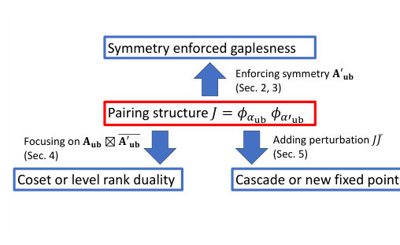
<figcaption class="paper-figure-caption"><b>Fig 1.</b> FIG. 1. Summary of nontrivial phenomena from the (half-)integer spin simple current. J = ϕαubϕα′ ub ∈Aub ⊠A′ub is the particle satisfying the spin constraint sJ = Z/2 and we call (half-)integer spin nonsimple current. The same object is also called connected étale algebra or condensable algebra[30, 63]. We interpret this object as symmetry operators in CFTs, electron operators in TQFTs, and perturbations triggering RG flows.</figcaption>
</figure>
<figure class="paper-figure-card">
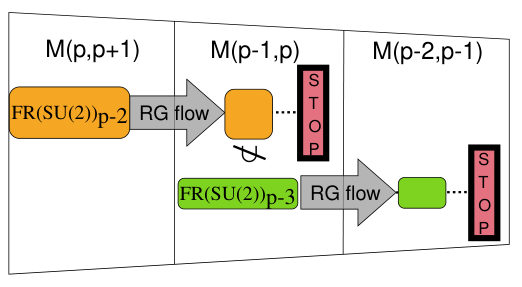
<figcaption class="paper-figure-caption"><b>Fig 2.</b> FIG. 2. The conceptual picture of the RG flow between unitary minimal models. The unbroken symmetry is FR(SU(2))p−2 through the RG flow, and as stated in section II B, this symmetry is stabilized under the flow. Then the flow will be stopped and will not go further to M(p −2, p −1). However, an emergent symmetry FR(SU(2)p−3),which is not a subsymmetry of FR(SU(2)p−2), allows M(p −1, p) to flow to M(p −2, p −1).</figcaption>
</figure>
<figure class="paper-figure-card">
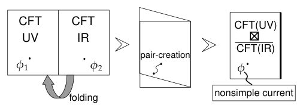
<figcaption class="paper-figure-caption"><b>Fig 3.</b> FIG. 3. This figure shows how the (half-)integer spin nonsimple current emerges after folding. This current corresponds to the unbroken symmetry Aub through the flow. This is an analogous phenomenon to the BCS pair creation in condensed matter physics.</figcaption>
</figure>
<figure class="paper-figure-card">
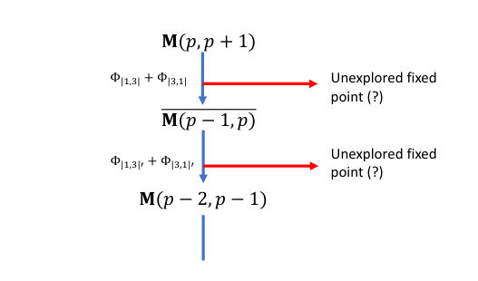
<figcaption class="paper-figure-caption"><b>Fig 4.</b> FIG. 4. Possible scenario for the resonance effect between relevant perturbations and irrelevant perturbations. If one believes the RG domain wall and perturbative analysis, the cascade will appear. On the other hand, a variant of the Morse theory in [113] may indicate a new series of fixed points. Their relation to complex fixed points or weak-first-order transitions is an interesting problem[120]. The existence of the first-order transitions in the lattice models has been pointed out in [248] with a remark on the Q-state Potts models with Q &gt; 4. More or less, both cascades and the first-order transition seem unconventional when applying CFTs, and further clarification by other methods is...</figcaption>
</figure>
</div>

<p><strong>Summary.</strong> This paper uses advanced CFT techniques to analyze how generalized symmetries stabilize massless Renormalization Group flows between minimal models. It demonstrates that specific unbroken symmetries eliminate dangerous perturbations, confirming the stability of the resulting infrared phase as a gapless state. This work provides a deep connection between abstract algebraic structures and the robustness of physical quantum phases.</p>
<p><strong>Why it may be interesting.</strong> The concept of symmetry enforcing stability in RG flows is highly relevant for understanding quantum critical points and topological order in condensed matter systems, providing a powerful theoretical tool beyond standard perturbation theory.</p>
<details>
<summary>Detailed structure</summary>
<p><strong>Main problem.</strong> The study investigates how generalized symmetry dictates the stability of massless Renormalization Group (RG) flows or Higgs transitions between different Conformal Field Theories (CFTs). The core goal is to understand how unbroken symmetries enforce gapless phases during these theoretical phase changes.</p>
<p><strong>Main result.</strong> In specific minimal model flows, the presence of an unbroken fusion ring symmetry eliminates all relevant perturbations in the infrared theory, confirming its stability as a (weak-)symmetry-enforced gapless phase. Furthermore, this structure dictates potential cascade effects between different fixed points.</p>
<p><strong>Method.</strong> The analysis employs Hamiltonian formalism for CFTs and their RG mappings, combining perturbative checks with nonperturbative algebraic methods involving symmetry constraints like fusion rings and coset structures.</p>
<p><strong>Model / system.</strong> The primary system is the massless RG flow between unitary minimal models, specifically $M(p, p+1) 
ightarrow M(p-1, p)$, which models theoretical phase transitions analogous to Higgs phenomena. The underlying mathematical framework involves CFTs and their associated symmetry algebras.</p>
<p><strong>Key observables.</strong> Unbroken fusion ring symmetry $    ext{FR}(SU(2)_{p-2})$, stability of the infrared (IR) fixed point, and the structure of (half-)integer spin nonsimple currents.</p>
<p><strong>Important parameters / regimes.</strong> The integer parameter $p$ defining the minimal models ($p>3$), and the flow parameters governing relevant/irrelevant perturbations.</p>
<p><strong>Assumptions / limitations.</strong> The analysis assumes the existence of RG flows and relies heavily on symmetry arguments to prove stability, contrasting with purely algebraic methods that might not guarantee physical stability.</p>
<p><strong>Figures summary.</strong> Figure 1 summarizes key concepts: pairing structure involving nonsimple currents, symmetry-enforced gaplessness, coset/level rank duality structures, and the potential for phase transition cascades.</p>
<p><strong>Paper structure.</strong> The paper systematically analyzes the RG flow by first establishing the role of generalized symmetry in stabilizing the IR theory. It then details how specific symmetries (like $ ext{FR}(SU(2)_{p-2})$) eliminate relevant perturbations, leading to conclusions about gapless phases and potential cascade dynamics.</p>
</details>
<details>
<summary>Abstract</summary>
<p>We study the role of generalized symmetry in massless renormalization group flows or Higgs transitions. In particular, we revisit the massless renormalization group flows in unitary minimal models, $\mathbf{M}(p,p+1) \rightarrow \overline{\mathbf{M}(p-1,p)}$ preserving the fusion ring symmetry $\text{FR} (SU(2)_{p-2})\subset \mathbf{M}(p,p+1)$ where $p$ is an integer satisfying $p>3$. In this series of flows, we demonstrate that the unbroken fusion ring symmetry $\text{FR} (SU(2)_{p-2})$ eliminates all relevant perturbations in the $\overline{\mathbf{M}(p-1,p)}$ model. Hence, the infrared theory $\overline{\mathbf{M}(p-1,p)}$ is stable at the level of the scaling analysis and can be interpreted as a (weak-)symmetry-enforced gapless phase in contemporary theoretical physics. Phenomenologically, by the folding trick, the unbroken fusion ring symmetry corresponds to a (half-)integer spin nonsimple current, a variant of the Cooper pair involving nonabelian anyons generated from the coset or level-rank duality structures. Moreover, we demonstrate that the structure of (half-)integer spin nonsimple current plays a fundamental role in causing the resonance effect of relevant and dangerously irrelevant perturbations. This resonance effect may result in the cascade of phase transitions (or the system flows to unexplored fixed points), and the symmetry can be a stopper of such unconventional flows.</p>
</details>
<p><sub><a href="#top">↑ back to top</a></sub></p>

<p><a id="paper-2608.08766"></a></p>
<h3 id="understanding-non-split-2-group-symmetry-31d-symtft-anomaly-and-bordism"><a href="http://arxiv.org/abs/2608.08766v1">Understanding Non-Split 2-Group Symmetry: (3+1)D SymTFT, Anomaly and Bordism</a></h3>
<p><strong>Authors:</strong> Zhenbang Gu, Ran Luo, Yi-Nan Wang, Yi Zhang<br>
<strong>Type:</strong> theory · <strong>Category:</strong> strongly correlated electrons · <strong>PDF:</strong> <a href="https://arxiv.org/pdf/2608.08766v1">https://arxiv.org/pdf/2608.08766v1</a><br>
<strong>Analysis basis:</strong> full PDF text, analyzed in chunks
<strong>Topic relevance:</strong> <code>driven-dissipative phase transition</code> <strong>2/5</strong> · <code>Keldysh / 2PI / non-Gaussian methods</code> <strong>1/5</strong> · <code>analog quantum simulation</code> <strong>1/5</strong> · <code>correlated / nonlocal dissipation</code> <strong>1/5</strong> · <code>methods for driven-dissipative</code> <strong>1/5</strong> · <code>quantum measurements</code> <strong>1/5</strong></p>
<div class="figure-strip-hint">↔ Scroll figures horizontally</div>
<div class="paper-figures-scroll">
<figure class="paper-figure-card">

<figcaption class="paper-figure-caption"><b>Fig 1.</b> Figure 1: The action of the codimension-one defect labeled by a group element g ∈Π1 on the codimension-two defect labeled by a group element h ∈Π2.</figcaption>
</figure>
<figure class="paper-figure-card">
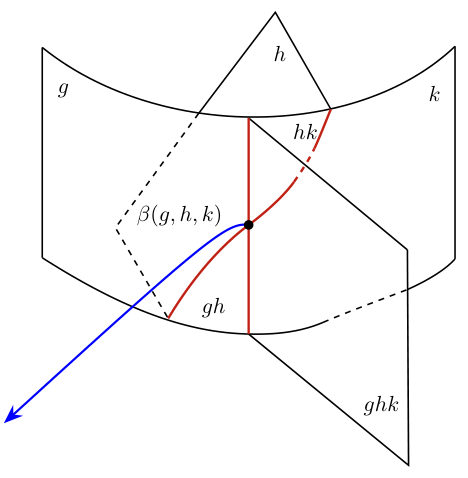
<figcaption class="paper-figure-caption"><b>Fig 2.</b> Figure 2: The physical meaning of the Postnikov class β(g, h, k) ∈Π2 as an emergent 1-form symmetry generator in the presence of three codimension-one defects labeled by g, h, k ∈Π1. The figure shows the case of (2+1)D.</figcaption>
</figure>
<figure class="paper-figure-card">
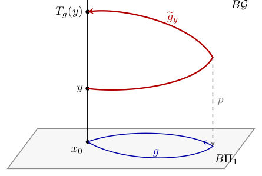
<figcaption class="paper-figure-caption"><b>Fig 3.</b> Figure 3: The vertical line is the single fiber Fx0 over x0. The closed loop g in the base lifts to a path egy in BG from y to Tg(y); the lifted path need not be closed.</figcaption>
</figure>
<figure class="paper-figure-card">
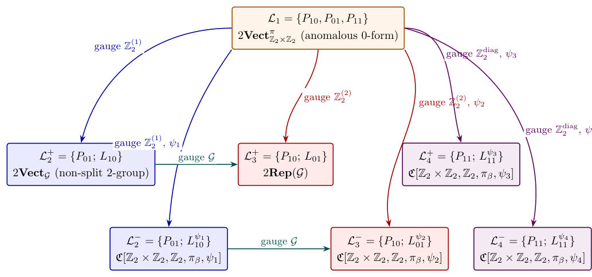
<figcaption class="paper-figure-caption"><b>Fig 4.</b> Figure 4: Gauging routes among the seven minimal topological boundary conditions of Z1(2Vectπ Z2×Z2) = Z1(2VectG). Colored solid arrows denote gauging a subgroup H ⊂Z2×Z2 at the boundary: blue H = Z(1) 2 , red H = Z(2) 2 , violet H = Zdiag 2 , teal the gauging of the full non-split 2-group G = (Z2, Z2, triv., 1) from the 2-group boundary. Every gauging arrow is invertible — the reverse arrow gauges the dual (quantum) symmetry. Gauging the full Z2×Z2 is obstructed by the anomaly.</figcaption>
</figure>
<figure class="paper-figure-card">
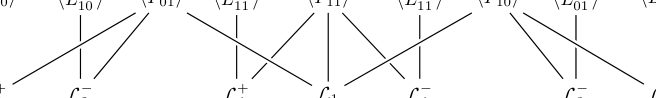
<figcaption class="paper-figure-caption"><b>Fig 5.</b> Figure 5: Hasse diagram of the connected condensable algebras of the SymTFT Z1(2Vectπβ Z2×Z2) ∼= Z1(2VectG) in the case without 2-group anomaly, ordered by inclusion relations. Each algebra is labelled by the bulk operators it condenses: the Wilson lines Pij and/or the flux strings Lij supported on a subgroup H ⊆Z2 × Z2, the latter decorated by a trivialization ψ of πβ|H on their worldvolume. The maximal elements are the seven La- grangian algebras of Table 4, with L± 2 = ⟨L(ψ1) 10 , P01⟩, L± 3 = ⟨L(ψ2) 01 , P10⟩, L± 4 = ⟨Lψ3,4 11 , P11⟩and L1 = ⟨P10, P01⟩. There is no Lagrangian algebra with H = Z2×Z2 since [πβ|Z2×Z2] = [πβ] ̸= 0.</figcaption>
</figure>
</div>

<p><strong>Summary.</strong> This work provides a deep theoretical analysis of physical systems governed by non-split 2-group symmetries. By employing advanced tools from algebraic topology and category theory, the authors classify quantum anomalies and map out the landscape of possible topological and physical boundary phases for (3+1)D TQFTs.</p>
<p><strong>Why it may be interesting.</strong> The rigorous mathematical framework connecting higher-dimensional topological field theories, generalized symmetries (2-groups), and anomaly classification is highly relevant for understanding exotic phases of matter beyond standard Landau theory in condensed matter physics.</p>
<details>
<summary>Detailed structure</summary>
<p><strong>Main problem.</strong> The paper systematically studies finite, non-split 2-group symmetries with non-trivial Postnikov classes in the context of (3+1)D Topological Quantum Field Theories (TQFTs). It aims to classify associated anomalies and boundary conditions.</p>
<p><strong>Main result.</strong> The authors classified anomalies by computing oriented and spin bordism groups for low dimensions ($d \le 5$) and identified multiple minimal Lagrangian algebras corresponding to different topological and physical boundary phases.</p>
<p><strong>Method.</strong> The methodology combines advanced algebraic topology (bordism theory, cohomology) with categorical methods (fusion 2-categories) applied to TQFT formalism. They analyze the structure of weak 2-group symmetries.</p>
<p><strong>Model / system.</strong> The focus is on physical theories in $d$-dimensional spacetime exhibiting a non-split 2-group symmetry $\mathcal{G}$. The analysis covers both gapped and gapless phases, relating to Symmetry Protected Topological (SPT) phases.</p>
<p><strong>Key observables.</strong> Anomalies classified by cohomology groups like $H^4(B\mathcal{G}; U(1)) \cong \mathbb{Z}_2$, and the identification of various boundary conditions (e.g., symmetric, partial SSB, G-SPT).</p>
<p><strong>Important parameters / regimes.</strong> The dimension of spacetime ($d$), the structure of the 2-group symmetry $\mathcal{G}$, and the non-trivial Postnikov class.</p>
<p><strong>Assumptions / limitations.</strong> The analysis relies on the weak 2-group formulation and may require assuming a twisted spin structure on the underlying manifold for certain calculations.</p>
<p><strong>Figures summary.</strong> Tables summarize calculated bordism groups (Table 1) and different physical boundary conditions/phases (Table 2). Figures illustrate defect interactions and the physical meaning of the Postnikov class.</p>
<p><strong>Paper structure.</strong> The paper proceeds by defining the non-split 2-group symmetry, calculating its anomalies using bordism theory for $d \le 5$, then applying this to construct and classify the resulting Symmetry TQFTs ($    ext{SymTFT}$) and their boundary conditions via categorical methods.</p>
</details>
<details>
<summary>Abstract</summary>
<p>We present a systematic study of finite, non-split 2-group symmetries with a non-trivial Postnikov class, focusing on the simplest example with a $\mathbb{Z}_2$ 0-form symmetry and a $\mathbb{Z}_2$ 1-form symmetry, intertwined together by the non-trivial Postnikov class in $H^3(B\mathbb{Z}_2;\mathbb{Z}_2)\cong\mathbb{Z}_2$, denoted by $\mathcal{G}$. We classify the anomalies of this 2-group symmetry for physical theories in $d$-dimensional spacetime, by computing the oriented bordism groups $Ω_{d+1}^{\rm SO}(B\mathcal{G})$ and the spin bordism groups $Ω_{d+1}^{\rm Spin}(B\mathcal{G})$ for $d\leq 5$. For the case of $d=3$, we investigate the Symmetry TFT/TO of the 2-group symmetry $\mathcal{G}$ using the language of fusion 2-categories, as well as (3+1)D TQFT actions, for the cases without or with the 2-group anomaly classified by $\operatorname{Hom}\left(\widetildeΩ_4^{\rm SO}(B\mathcal{G}),U(1)\right) \cong H^4(B\mathcal{G};U(1))\cong\mathbb{Z}_2$. We classify the minimal topological and physical boundary conditions of the Symmetry TFTs, and carry out the categorical Landau paradigm for such non-split finite 2-group.</p>
</details>
<p><sub><a href="#top">↑ back to top</a></sub></p>

<p><a id="paper-2608.09434"></a></p>
<h3 id="birefringent-biomineral-microcarriers-stabilise-multimodal-nanodiamond-quantum-sensing-in-liquids"><a href="http://arxiv.org/abs/2608.09434v1">Birefringent Biomineral Microcarriers Stabilise Multimodal Nanodiamond Quantum Sensing in Liquids</a></h3>
<p><strong>Authors:</strong> T. Amro, M. Attrash, A. Droby, A. Ushkov, R. Malkinson, P. Penshin, A. Hen, V. Bobrovs, P. Ginzburg, H. Barhum, N. Bar-Gill<br>
<strong>Type:</strong> both · <strong>Category:</strong> other · <strong>PDF:</strong> <a href="https://arxiv.org/pdf/2608.09434v1">https://arxiv.org/pdf/2608.09434v1</a><br>
<strong>Analysis basis:</strong> full PDF text, analyzed in chunks
<strong>Topic relevance:</strong> <code>quantum measurements</code> <strong>2/5</strong> · <code>QC/QI experiment</code> <strong>1/5</strong> · <code>driven-dissipative phase transition</code> <strong>1/5</strong> · <code>methods for driven-dissipative</code> <strong>1/5</strong> · <code>quantum optics experiment</code> <strong>1/5</strong></p>
<div class="figure-strip-hint">↔ Scroll figures horizontally</div>
<div class="paper-figures-scroll">
<figure class="paper-figure-card">
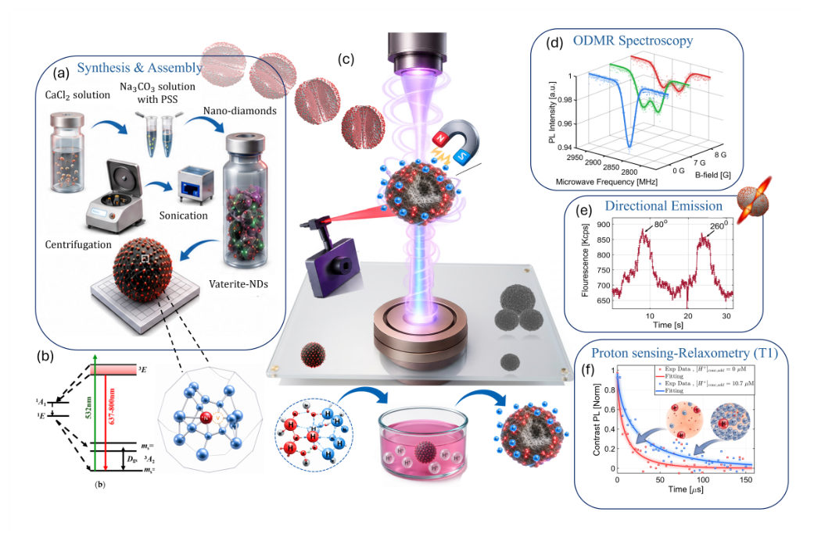
<figcaption class="paper-figure-caption"><b>Fig 1.</b> FIG. 1: Carrier-engineered vaterite−nanodiamond quantum sensor. (a) Assembly of fluorescent 40-nm NV nanodiamonds on vaterite microspherulites. (b) NV−centre energy levels and spin-dependent optical cycle. (c) Optical trapping and confocal readout of one hybrid in liquid. (d) ODMR spectra under applied magnetic fields. (e) Polarisation-dependent photoluminescence from the birefringent carrier. (f) T1 relaxometry during nominal proton-equivalent dosing in buffered medium.</figcaption>
</figure>
<figure class="paper-figure-card">
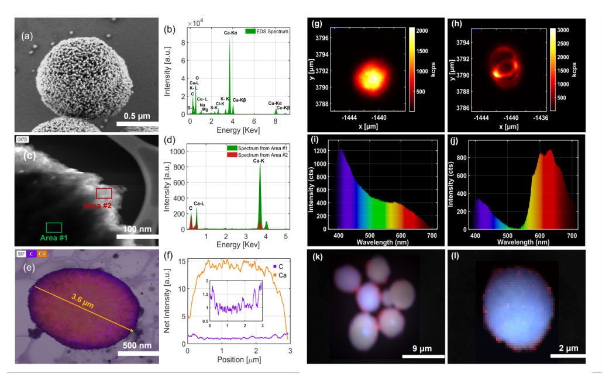
<figcaption class="paper-figure-caption"><b>Fig 2.</b> FIG. 2: The NV layer is localised at the carrier–liquid interface. (a) SEM image of a representative hybrid particle. (b) Survey EDS spectrum showing the calcium-rich host. (c) TEM image of the particle edge. (d) Local EDS spectra from the marked interior and peripheral regions. (e) Bright-field TEM image with carbon (purple) and calcium (orange) overlays for a 3–3.6 µm particle. (f) Elemental line profiles across the particle. (g,h) Confocal PL maps acquired at the lower surface and mid-plane. (i,j) CL spectra from the carrier core and surface region. (k,l) CL maps acquired with a 30-keV electron beam at 17 and 16 nA. The combined structural and spectral data are consistent with a...</figcaption>
</figure>
<figure class="paper-figure-card">
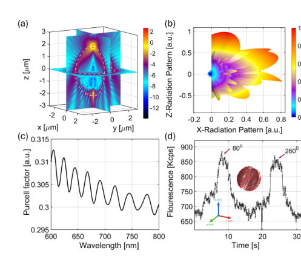
<figcaption class="paper-figure-caption"><b>Fig 3.</b> FIG. 3: Birefringence couples carrier orientation to emission collection. (a) Calculated near-field distribution at 680 nm for a z-oriented dipole in a 40-nm nanodiamond at the vaterite surface. (b) Corresponding far-field distribution at 650 nm. (c) Purcell-factor spectrum averaged over three dipole orientations and multiple surface positions relative to an identical emitter in homogeneous water. Values below unity indicate suppression of total radiated power relative to that reference, while the angular distribution remains anisotropic.(d) PL from one hybrid trapped in D2O, averaged for 20 s at each quarter-wave-plate setting. Two maxima separated by approximately 180◦report a...</figcaption>
</figure>
<figure class="paper-figure-card">
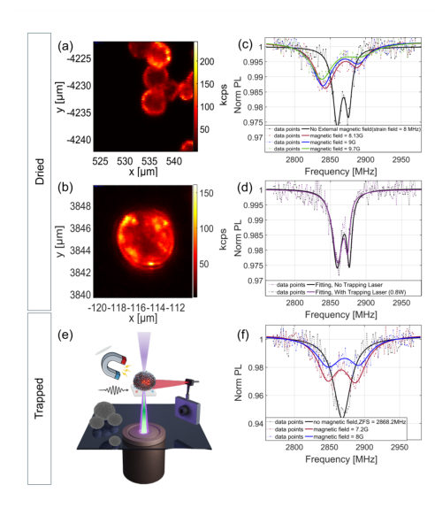
<figcaption class="paper-figure-caption"><b>Fig 4.</b> FIG. 4: ODMR of vaterite-nanodiamond hybrid microcarriers. (a) Wide-field PL image of multiple hybrids. (b) PL image of a single hybrid selected for spectroscopy. (c) ODMR spectra of a dried hybrid under different magnetic fields, showing Zeeman splitting around (D ≈2868.2) MHz. (d) ODMR spectra of a dried hybrid acquired with 976 nm illumination from the trapping path switched off and on, showing negligible change in linewidth or resonance position. (e) Schematic of the optical trapping and detection setup. (f) ODMR spectra of a trapped hybrid at different magnetic fields; the spectra were fit with two Lorentzian dips for sensitivity estimation; the corresponding magnetic sensitivity is...</figcaption>
</figure>
<figure class="paper-figure-card">
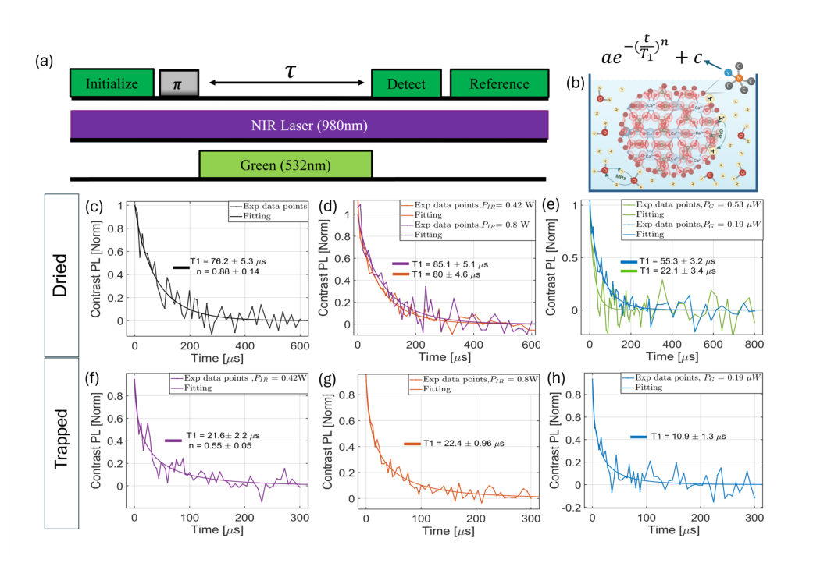
<figcaption class="paper-figure-caption"><b>Fig 5.</b> FIG. 5: Optical controls separate trapping from interfacial relaxation. (a) Pulse sequences comprising optical initialisation, a variable dark interval τ, optical readout and a reference measurement, with a microwave π pulse applied for the dried-state measurements but omitted for the trapped-state measurements. The 976-nm trap remains on; 532-nm light is absent during the dark interval unless tested.(b) Interfacial fluctuations that can drive NV relaxation. (c) T1 decay of a dried hybrid. (d) Dried-hybrid T1 under 976-nm illumination. (e) Dried-hybrid T1 under weak 532-nm illumination during the relaxation interval. (f,g) T1 decays of trapped hybrids in ethanol containing up to 10% water....</figcaption>
</figure>
</div>

<p><strong>Summary.</strong> The authors engineered a novel quantum sensor by embedding nitrogen-vacancy nanodiamonds onto birefringent biomineral microcarriers. This carrier stabilizes the quantum emitter against liquid motion while providing an active, proton-sensitive interface. The resulting platform enables versatile, multimodal sensing of magnetic fields and chemical species in complex biological media.</p>
<p><strong>Why it may be interesting.</strong> This work bridges solid-state quantum emitters (NV centers) with complex soft matter interfaces (biomineral carbonates) to create robust, field-deployable sensors. The integration of mechanical stabilization (birefringence) with chemical sensing mechanisms is highly relevant for open quantum systems research.</p>
<details>
<summary>Detailed structure</summary>
<p><strong>Main problem.</strong> Liquid nanodiamond quantum sensors are limited by Brownian rotation, variable photon collection, and perturbations from optical trapping, hindering their use as stable probes in complex media.</p>
<p><strong>Main result.</strong> By assembling NV centers on birefringent biomineral microcarriers, the system achieves orientation stabilization and demonstrates multimodal sensing (magnetic field and proton/pH) with high sensitivity in liquid environments.</p>
<p><strong>Method.</strong> The authors combine optical trapping, birefringence-induced torque for mechanical stabilization, ODMR spectroscopy for magnetic measurements, and relaxometry ($T_1$) to probe chemical interactions.</p>
<p><strong>Model / system.</strong> The platform uses 40-nm NV nanodiamonds anchored to porous vaterite microspherulites. The system is modeled using grand canonical charge-regulation models that couple proton chemical potential to interfacial switching kinetics, alongside an effective spin Hamiltonian for optical readout.</p>
<p><strong>Key observables.</strong> Zeeman-split resonances (magnetic field sensing), $T_1$ relaxation times ($\mu	ext{s}$ scale), and concentration/pH sensitivities ($\mu	ext{M} \cdot 	ext{Hz}^{-1/2}$, $ ext{mPH} \cdot  ext{Hz}^{-1/2}$).</p>
<p><strong>Important parameters / regimes.</strong> Magnetic fields up to $0.8 	ext{ mT}$; proton doses in the range of $10.7 \, \mu	ext{M}$ (DMEM); characteristic relaxation times ($  au_{    ext{match}} \approx 55  ext{ ps}$).</p>
<p><strong>Assumptions / limitations.</strong> The carrier provides an addressable body frame via optical torque, stabilizing the sensor against Brownian motion; chemical sensing relies on modeling the interface as a proton-active thermodynamic boundary.</p>
<p><strong>Figures summary.</strong> Figures map the sequence from assembly to readout (optical, Zeeman, chemical); structural evidence confirms NV localization at the carrier–liquid interface; and subsequent figures detail polarization dependence and $T_1$ decay curves under varying conditions.</p>
<p><strong>Paper structure.</strong> The paper progresses by first identifying limitations in free nanodiamonds, then presenting the engineered birefringent carrier platform. It details measurements across magnetic sensing (Zeeman splitting), chemical sensing ($T_1$ in DMEM/ethanol), and concludes with a theoretical model coupling proton chemistry to quantum dynamics.</p>
</details>
<details>
<summary>Abstract</summary>
<p>Mobile nanodiamond quantum sensors in liquids are limited by Brownian rotation, variable photon collection, and perturbations introduced by optical trapping. Here, we assemble 40-nm nitrogen-vacancy nanodiamonds at the surface of porous, birefringent vaterite microspherulites. This carbonate biomineral provides a polarization-addressable body frame, anisotropic emission redistribution, and a proton-active thermodynamic interface. Under 976-nm optical trapping, the hybrids retain their spin resonance and longitudinal relaxation, with the resonance contrast varying by less than 7 percent and the resonance centre shifting by approximately 1 MHz at 0.8 W. Zeeman-split resonances enable magnetic-field sensing from 0 to 0.8 mT, with a response metric of 78-144 microT per square root Hz. In buffered cell-culture medium, a 10.7 microM nominal proton-equivalent dose shortens T1 from 23.4 +/- 2.3 to 9.0 +/- 1.2 microseconds, corresponding to concentration and pH sensitivities of 6.46 microM per square root Hz and 6.54 mpH per square root Hz, respectively, in DMEM. By contrast, a 500-fold higher proton dose in ethanol produces a substantially weaker spin response, highlighting the role of the carbonate-rich interface. We develop a grand-canonical charge-regulation model coupling proton chemical potential to interfacial switching kinetics within the NV spectral window, capturing medium-dependent dynamic proton transduction. By integrating orientation stabilisation, optical manipulation, magnetic sensing, and interfacial chemical response, this carbonate-rich hybrid platform establishes a versatile approach to multimodal quantum sensing in complex biological liquids.</p>
</details>
<p><sub><a href="#top">↑ back to top</a></sub></p>

<p><a id="paper-2608.07869"></a></p>
<h3 id="causal-diamond-thermalization-induces-nonseparability-in-n-partite-quantum-systems"><a href="http://arxiv.org/abs/2608.07869v1">Causal-diamond thermalization induces nonseparability in N-partite quantum systems</a></h3>
<p><strong>Authors:</strong> Hui-Chen Yang, Shu-Min Wu<br>
<strong>Type:</strong> theory · <strong>Category:</strong> other · <strong>PDF:</strong> <a href="https://arxiv.org/pdf/2608.07869v1">https://arxiv.org/pdf/2608.07869v1</a><br>
<strong>Analysis basis:</strong> full PDF text, analyzed in chunks
<strong>Topic relevance:</strong> <code>driven-dissipative phase transition</code> <strong>2/5</strong> · <code>correlated / nonlocal dissipation</code> <strong>1/5</strong> · <code>non-equilibrium universality</code> <strong>1/5</strong> · <code>quantum measurements</code> <strong>1/5</strong> · <code>scars &amp; prethermalization</code> <strong>1/5</strong></p>
<div class="figure-strip-hint">↔ Scroll figures horizontally</div>
<div class="paper-figures-scroll">
<figure class="paper-figure-card">
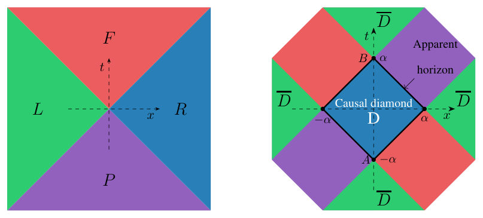
<figcaption class="paper-figure-caption"><b>Fig 1.</b> FIG. 1: Diagrammatic correspondence between Rindler wedges and causal diamond under the composite</figcaption>
</figure>
<figure class="paper-figure-card">
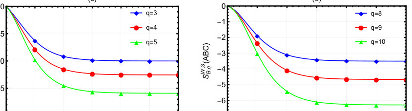
<figcaption class="paper-figure-caption"><b>Fig 2.</b> FIG. 2: AR q-conditional entropy for bosonic GHZ and W states in causal diamond spacetime, plotted as</figcaption>
</figure>
<figure class="paper-figure-card">
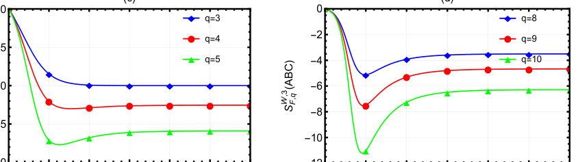
<figcaption class="paper-figure-caption"><b>Fig 3.</b> FIG. 3: Dependence of the AR q-conditional entropy for fermionic GHZ and W states on the finite-lifetime</figcaption>
</figure>
<figure class="paper-figure-card">
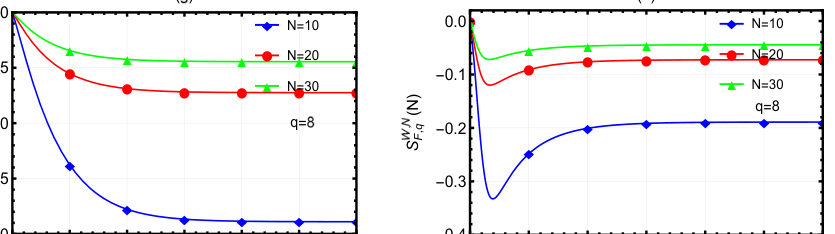
<figcaption class="paper-figure-caption"><b>Fig 4.</b> FIG. 4: AR q-conditional entropy of both bosonic and fermionic fields for W states in causal diamond</figcaption>
</figure>
</div>

<p><strong>Summary.</strong> This paper analyzes how the finite lifetime of an observer, modeled by a causal diamond, induces thermal effects on multipartite quantum states. Using advanced entropy measures, the authors find that particle statistics and entanglement structure dictate whether nonseparability degrades or even enhances under these relativistic conditions. The results provide crucial insights for designing quantum information protocols in curved spacetimes.</p>
<p><strong>Why it may be interesting.</strong> It connects fundamental concepts from general relativity (causal structure, horizons) directly to quantum information measures like entanglement robustness, which is highly relevant for understanding quantum computation in curved spacetime.</p>
<details>
<summary>Detailed structure</summary>
<p><strong>Main problem.</strong> The study investigates how causal restrictions, modeled by a finite-lifetime observer within a causal diamond spacetime, induce thermal effects that alter the nonseparability of multipartite quantum states.</p>
<p><strong>Main result.</strong> Thermalization can enhance fermionic W state nonseparability (unlike bosons), and GHZ states maintain nonseparability independent of particle number N, while W states show degradation with increasing N.</p>
<p><strong>Method.</strong> The authors use the Abe-Rajagopal (AR) q-conditional entropy as a diagnostic tool to quantify nonseparability in bosonic and fermionic systems quantized within the causal diamond geometry.</p>
<p><strong>Model / system.</strong> The system involves N-partite bosonic and fermionic GHZ and W states, analyzed under the influence of a causal diamond horizon which induces an Unruh-like thermal effect.</p>
<p><strong>Key observables.</strong> Nonseparability quantified by AR q-conditional entropy; particle number distributions (Bose-Einstein/Fermi-Dirac).</p>
<p><strong>Important parameters / regimes.</strong> Observer lifetime ($T=2\alpha$), the nonextensivity parameter $q$, and the particle number $N$.</p>
<p><strong>Assumptions / limitations.</strong> The analysis assumes the initial state is in the global Minkowski vacuum, and the thermalization arises from tracing out inaccessible exterior modes.</p>
<p><strong>Figures summary.</strong> Figure 1 illustrates the diagrammatic correspondence between Rindler wedges and the causal diamond under conformal mapping.</p>
<p><strong>Paper structure.</strong> The paper establishes the physical context (causal diamonds inducing thermalization), details the mathematical tool (AR q-conditional entropy), and applies it to analyze specific states (GHZ/W).</p>
</details>
<details>
<summary>Abstract</summary>
<p>We investigate the nonseparability of multipartite bosonic and fermionic $GHZ$ and $W$ states in a causal diamond spacetime using the Abe-Rajagopal (AR) $q$-conditional entropy. The finite lifetime of the observer gives rise to a causal diamond horizon, which induces an Unruh-like thermal effect and leads to a nontrivial restructuring of nonseparability in $N$-partite systems. Our main result is that the thermal effect can enhance a net nonseparability of fermionic $W$ states, in sharp contrast to the general expectation that relativistic thermalization leads to a monotonic degradation of bosonic nonseparability. In addition, we find that fermionic nonseparability is generally more robust than its bosonic counterpart under causal diamond restrictions. Among different entangled resources, $GHZ$ states exhibit stronger nonseparability and greater robustness than $W$ states under identical causal conditions. We further show that the nonseparability of $W$ states decreases with increasing particle number $N$, whereas that of $GHZ$ states remains independent of $N$ in causal diamond spacetime. These results demonstrate that particle statistics, entanglement structure, and observer lifetime jointly determine the persistence of nonseparability in causally restricted spacetimes, providing insights for relativistic quantum information processing.</p>
</details>
<p><sub><a href="#top">↑ back to top</a></sub></p>

<p><a id="paper-2608.07684"></a></p>
<h3 id="optimally-embedded-tight-binding-for-reproducing-geometry-dependent-observables"><a href="http://arxiv.org/abs/2608.07684v1">Optimally embedded tight binding for reproducing geometry dependent observables</a></h3>
<p><strong>Authors:</strong> Jonas J Telle, Gunnar F Lange<br>
<strong>Type:</strong> theory · <strong>Category:</strong> other · <strong>PDF:</strong> <a href="https://arxiv.org/pdf/2608.07684v1">https://arxiv.org/pdf/2608.07684v1</a><br>
<strong>Analysis basis:</strong> full PDF text, analyzed in chunks
<strong>Topic relevance:</strong> <code>quantum measurements</code> <strong>2/5</strong> · <code>Keldysh / 2PI / non-Gaussian methods</code> <strong>1/5</strong> · <code>analog quantum simulation</code> <strong>1/5</strong> · <code>driven-dissipative phase transition</code> <strong>1/5</strong> · <code>methods for driven-dissipative</code> <strong>1/5</strong></p>
<div class="figure-strip-hint">↔ Scroll figures horizontally</div>
<div class="paper-figures-scroll">
<figure class="paper-figure-card">
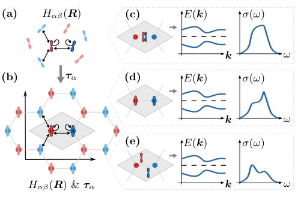
<figcaption class="paper-figure-caption"><b>Fig 1.</b> FIG. 1. Schematic of main results. (a) A tight-binding model can be viewed as a weighted graph, where hoppings and on-site terms are represented by edges and loops. (b) Specifying the orbital positions τα amounts to embedding this graph in real space. (c)–(e) Changing the orbital positions leaves geometry independent quantities such as band struc- tures E(k) unchanged, but can dramatically alter geometry dependent quantities such as optical responses σ(ω). Thus, the orbital positions can be seen as a tuning parameter which can be utilised to fit geometric quantities.</figcaption>
</figure>
<figure class="paper-figure-card">
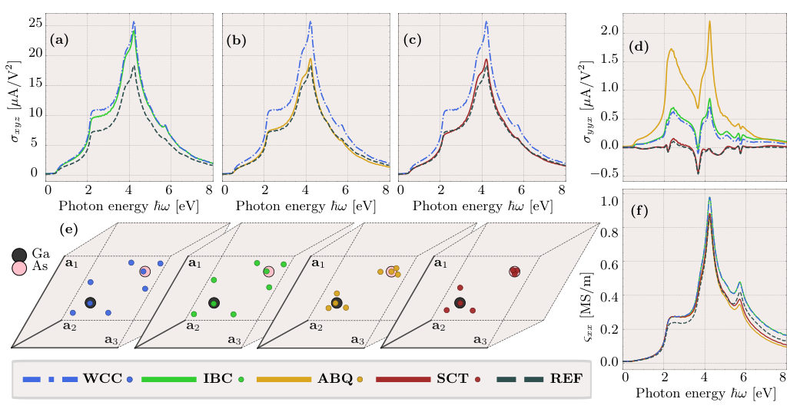
<figcaption class="paper-figure-caption"><b>Fig 2.</b> FIG. 2. GaAs tight biding optical responses for different embeddings. Legend abbreviations denote: Wannier Charge Centers (WCC), Interspace Berry Connection (IBC), Abelian QGT (ABQ), Shift Current Tensor (SCT) and Wannier interpolation (REF). (a)–(c) The only independent shift current component (xyz). (d) A symmetry-disallowed shift current component (yyx). (e) Orbital embeddings in the irreducible unit cell. (f) The only independent optical conductivity component (xx).</figcaption>
</figure>
<figure class="paper-figure-card">
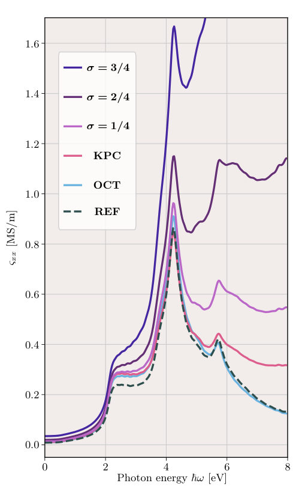
<figcaption class="paper-figure-caption"><b>Fig 3.</b> FIG. 3. Optical conductivity ςxx for GaAs for different embeddings. Beyond the tailored fit on the Optical Conduc- tivity Tensor (OCT) and Wannier interpolation (REF), we show plots for increasing noise, corresponding to the aver- age of 15 responses computed from orbital embeddings drawn from a normal distribution with standard deviation σ, and the geometry independent contribution (KPC) obtained by placing all orbitals at the origin (i.e. σ = 0).</figcaption>
</figure>
<figure class="paper-figure-card">
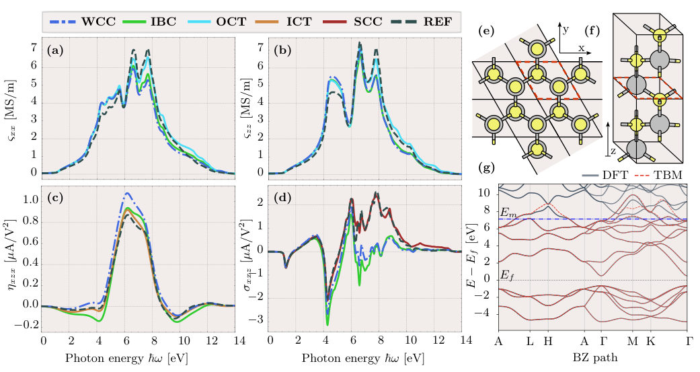
<figcaption class="paper-figure-caption"><b>Fig 4.</b> FIG. 4. CdS tight-binding optical responses for different embeddings. Legend abbreviations denote: Wannier Charge Centers (WCC), Interspace Berry Connection (IBC), Optical Conducitvity Tensor (OCT), Injection Current Tensor (ICT), Shift Current xxz-Component (SCC) and Wannier interpolation (REF). (a)–(b) The independent optical conductivity components (resp. xx and zz). (c) The independent injection current component (xzx). The scaling is arbitrary, with the relaxation time set to 1 fs. (d) One of three independent shift current components (xxz). (e)–(f) The wurtzite structure, with Cd in grey and S in yellow. In (e), a top view of a single layer above the xy-plane. The lattice extends...</figcaption>
</figure>
<figure class="paper-figure-card">
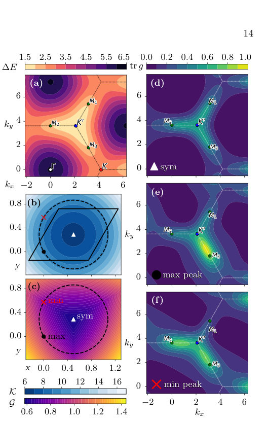
<figcaption class="paper-figure-caption"><b>Fig 5.</b> FIG. 5. Geometry dependence of the metric trace in a Haldane model with parameters ∆= 0.3, t1 = −1 and t2 = −0.21, and lattice constant a = 1. (a) The band gap (in units |t1|) over the BZ around a K′ point with high symmetry points indicated. Notice the near-flat triangular plateau in the band gap between K′ and the C3 equivalent M-points marked M1, M2 and M3. (b)–(c) The BZ average metric trace K as a function of orbital separation (x, y) (no units), and the max- imum of the metric trace G (units a2) as a function of orbital separation, respectively. The unit cell is indicated, together with the circular equipotential curve of the quantum weight K, corresponding to the geometry independent...</figcaption>
</figure>
</div>

<p><strong>Summary.</strong> This paper addresses the limitation of tight-binding models that fail when calculating properties sensitive to spatial geometry, despite accurately predicting band structures. The authors propose an 'optimally embedded' framework, treating orbital positions as tunable parameters fixed against experimental or ab-initio data. This allows for the construction of highly accurate minimal models capable of reproducing complex geometric observables like optical responses.</p>
<p><strong>Why it may be interesting.</strong> While focused on solid-state physics, the methodology—treating geometric structure (embeddings) as tunable model parameters fixed by external data to improve predictive power—is a general concept applicable to parameterizing complex quantum systems where full first-principles calculation is prohibitive.</p>
<details>
<summary>Detailed structure</summary>
<p><strong>Main problem.</strong> Tight-binding models fail to accurately reproduce geometry-dependent physical responses, even when they correctly model geometry-independent properties like band structures.</p>
<p><strong>Main result.</strong> The authors introduce an 'optimally embedded tight binding' framework where orbital embeddings are treated as explicit tuning parameters fixed against reference data to achieve accurate minimal models.</p>
<p><strong>Method.</strong> They determine optimal embeddings by decomposing observable quantities into geometry-independent and dependent parts, utilizing position derivatives for efficient fitting.</p>
<p><strong>Model / system.</strong> The study uses solid-state systems modeled via tight-binding theory (e.g., GaAs, CdS), focusing on the Hamiltonian structure derived from Bloch states and incorporating orbital embeddings ($  au_\alpha$).</p>
<p><strong>Key observables.</strong> Non-linear optical responses ($\sigma(\omega)$), quantum geometric tensor, and local metric trace.</p>
<p><strong>Important parameters / regimes.</strong> Orbital embedding parameters ($\{	au_\alpha\}$) are the key tunable parameters.</p>
<p><strong>Assumptions / limitations.</strong> The initial approximation assumes orbitals are nearly point-like; the method requires fixing embeddings against external physical data (ab-initio or experiment).</p>
<p><strong>Figures summary.</strong> Figures compare optical responses using different embedding models and show that fitting optimal embeddings on a coarse grid successfully reproduces the true, dense response.</p>
<p><strong>Paper structure.</strong> The paper first establishes the failure of standard tight-binding models for geometry dependence. It then introduces the optimal embedding framework, detailing the mathematical decomposition used to tune parameters against physical observables, culminating in successful quantitative reproduction of optical responses.</p>
</details>
<details>
<summary>Abstract</summary>
<p>In tight-binding models, the position operator is reduced to intra-cell orbital positions (embeddings). While accurately reproducing band structures, such models often fail for geometry dependent responses depending on the position operator. To address this, we investigate the role of these embeddings and introduce the general framework of optimally embedded tight binding. Treating the embeddings as geometric tuning parameters to be fixed against a reference response (obtained from ab-initio computation or experiment), we obtain tight-binding models of GaAs and CdS which quantitatively reproduce non-linear optical responses at no cost to band structure accuracy. The optimal embeddings are determined efficiently using position derivatives obtained from decomposing tight-binding observables into a geometry independent and dependent part, and explicit derivatives are provided for key quantities such as the quantum geometric tensor. The decomposition reveals where geometric effects dominate, and we show in both toy models and in the Chern insulator V2O3 how geometry can dramatically alter the local metric trace. Our results highlight that orbital embeddings should be treated as a genuine model parameter which should be explicitly fixed against physical data to get accurate minimal models.</p>
</details>
<p><sub><a href="#top">↑ back to top</a></sub></p>

<p><a id="paper-2608.08778"></a></p>
<h3 id="how-to-test-bell-nonlocality-for-gravity"><a href="http://arxiv.org/abs/2608.08778v1">How to Test Bell Nonlocality for Gravity?</a></h3>
<p><strong>Authors:</strong> Debarshi Das, Mir Alimuddin, Simon Storz, Yiwen Chu, Sougato Bose<br>
<strong>Type:</strong> theory · <strong>Category:</strong> other · <strong>PDF:</strong> <a href="https://arxiv.org/pdf/2608.08778v1">https://arxiv.org/pdf/2608.08778v1</a><br>
<strong>Analysis basis:</strong> full PDF text, analyzed in chunks
<strong>Topic relevance:</strong> <code>QC/QI experiment</code> <strong>2/5</strong> · <code>quantum measurements</code> <strong>2/5</strong> · <code>analog quantum simulation</code> <strong>1/5</strong></p>
<div class="figure-strip-hint">↔ Scroll figures horizontally</div>
<div class="paper-figures-scroll">
<figure class="paper-figure-card">
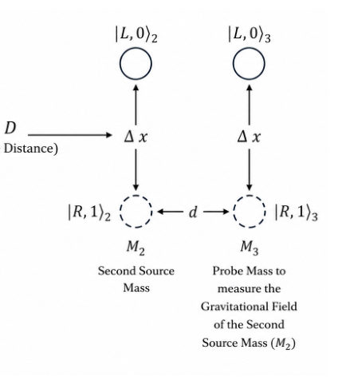
<figcaption class="paper-figure-caption"><b>Fig 1.</b> FIG. 1: Geometry of the setup</figcaption>
</figure>
</div>

<p><strong>Summary.</strong> This paper outlines a novel, loophole-free experiment to test if the gravitational field exhibits Bell nonlocality. It uses four massive objects placed in spatial superpositions whose spins are entangled and subsequently interact gravitationally. A violation of the CHSH inequality in local spin measurements would provide evidence that gravity itself is fundamentally quantum mechanical.</p>
<p><strong>Why it may be interesting.</strong> It proposes an experimental roadmap for testing fundamental quantum principles (Bell nonlocality) in a regime where gravity is treated as a quantum field, bridging quantum information theory with general relativity.</p>
<details>
<summary>Detailed structure</summary>
<p><strong>Main problem.</strong> The primary goal is to develop a protocol to test Bell nonlocality directly on the gravitational field itself, moving beyond testing entanglement only in the masses or interactions.</p>
<p><strong>Main result.</strong> The authors propose a loophole-free, fully device-independent test that can certify Bell nonlocality of gravitational curvatures if gravity is quantum mechanical.</p>
<p><strong>Method.</strong> A multi-step protocol involving creating spatial superpositions on source and probe masses, allowing them to interact gravitationally, and then performing local spin measurements to violate the CHSH inequality.</p>
<p><strong>Model / system.</strong> The system involves four massive objects ($M_1, M_2$ sources; $M_0, M_3$ probes) with embedded entangled spins. The interaction is mediated by gravity, leading to entanglement of gravitational curvatures.</p>
<p><strong>Key observables.</strong> Violation of the Bell-CHSH inequality ($B > 2$), and the resulting post-selected correlations in the spin measurements.</p>
<p><strong>Important parameters / regimes.</strong> The protocol requires specific mass values ($\sim 10^{-13} - 10^{-14}$ kg) and superposition sizes ($\Delta x \sim 1 - 100 \mu$m) to achieve a measurable violation.</p>
<p><strong>Assumptions / limitations.</strong> Key assumptions include the ability to make electromagnetic interactions negligible, achieving long-distance entanglement distribution (closing locality loopholes), and assuming fair post-selection in the Bell test analysis.</p>
<p><strong>Figures summary.</strong> Figure 1 illustrates the geometry of two entangled source masses interacting with two probe masses.</p>
<p><strong>Paper structure.</strong> The paper details a multi-step protocol: entangling spins, creating spatial superpositions via unitary evolution, allowing gravitational interaction between sources and probes, performing local measurements on source spins (Step 5), and finally measuring probe spins to test Bell nonlocality (Step 6).</p>
</details>
<details>
<summary>Abstract</summary>
<p>We propose an experiment to test Bell nonlocality, a genuine nonclassicality, for the gravitational field. Two masses with embedded entangled spins (e.g., two diamonds with their NV-centre spins entangled) are placed well outside each other's light cones, ensuring a locality-loophole-free scenario. The spins are then coupled to the motion of their respective masses to generate spatial superpositions. Finally, local measurements are performed only on the gravitational fields of the two masses. If gravity is quantum, then the two entangled masses would entangle their gravitational fields, leading to correlations certifying Bell nonlocality of gravity. Trapped and ground-state cooled nano-objects with micron-sized spatial superposition are sufficient for this test. This goes beyond the recent proposals to test nonclassicality of gravity by providing, for the first time in the literature, a minimal tool to (i) create Einstein-Podolsky-Rosen (EPR) state of gravitational curvatures, (ii) witness entangled gravitational curvatures, (iii) rule out any local-realist description of gravity, and (iv) achieve a loophole-free test of gravity's nonclassicality in a fully device-independent way.</p>
</details>
<p><sub><a href="#top">↑ back to top</a></sub></p>

<p><a id="paper-2608.08271"></a></p>
<h3 id="on-demand-magnetic-doppler-nuclear-frequency-comb-memory-for-hard-x-ray-photons"><a href="http://arxiv.org/abs/2608.08271v1">On Demand magnetic-Doppler nuclear frequency comb memory for hard X-ray photons</a></h3>
<p><strong>Authors:</strong> Yanli Shi, Xiwen Zhang, Yuri Shvyd'ko, Olga Kocharovskaya<br>
<strong>Type:</strong> theory · <strong>Category:</strong> other · <strong>PDF:</strong> <a href="https://arxiv.org/pdf/2608.08271v1">https://arxiv.org/pdf/2608.08271v1</a><br>
<strong>Analysis basis:</strong> full PDF text, analyzed in chunks
<strong>Topic relevance:</strong> <code>quantum measurements</code> <strong>2/5</strong> · <code>driven-dissipative phase transition</code> <strong>1/5</strong> · <code>interference shaping light</code> <strong>1/5</strong> · <code>quantum optics experiment</code> <strong>1/5</strong></p>
<div class="figure-strip-hint">↔ Scroll figures horizontally</div>
<div class="paper-figures-scroll">
<figure class="paper-figure-card">
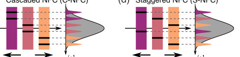
<figcaption class="paper-figure-caption"><b>Fig 1.</b> FIG. 1. Illustration of the magnetic-Doppler hybrid NFC. (a) The energy-level diagram of the ℏω0 = 14.4 keV nu- clear transition in 57FeBO3. The ground state |g⟩and ex- cited state |e⟩split into 2 and 4 sublevels, respectively, la- beled according to their nuclear magnetic quantum numbers M. The 2 transitions used in this work satisfying the selec- tion rule Mg −Me = 0 are spectrally separated by ∆ωZ. (b) Three thin 57FeBO3 M¨ossbauer absorbers, each of thickness L, resonantly interact with a linearly polarized hard X-ray photon, where the magnetic polarization vector ϵh is along x-direction. These absorbers move along z-axis with constant velocity spacing ∆v, resulting in Doppler detunings...</figcaption>
</figure>
<figure class="paper-figure-card">
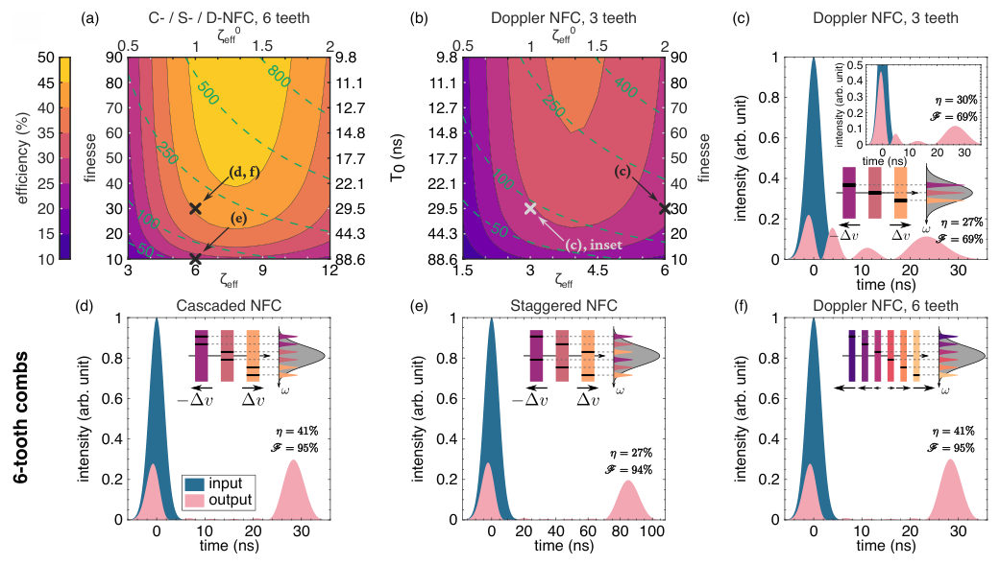
<figcaption class="paper-figure-caption"><b>Fig 2.</b> FIG. 2. Hard X-ray quantum memory by static nuclear frequency combs. (a,b) QM efficiencies as functions of effective optical thickness ξeff and comb finesse F for (a) 6-tooth C-NFC or S-NFC, and (b) 3-tooth D-NFC, all implemented with 3 M¨ossbauer absorbers. The incident photon bandwidth is matched to (a) the C-NFC and/or S-NFC, which is twice that of (b) D-NFC for maintaining the same comb spacing ∆ω. Cyan dashed lines are contours of constant total resonant optical thickness, given by ξ = NKFξ0 eff. (c-f) Demonstrations of QM using different static NFCs: (c) a 3-tooth D-NFC with 3 absorbers, (d) a 6- tooth C-NFC with 3 absorbers, (e) a 6-tooth S-NFC with 3 absorbers, and (f) a 6-tooth...</figcaption>
</figure>
<figure class="paper-figure-card">
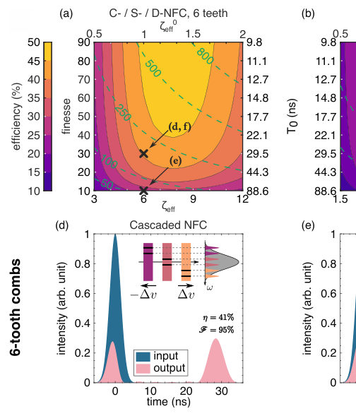
<figcaption class="paper-figure-caption"><b>Fig 3.</b> Figure 4 compares the efficiencies and fidelities of on- demand QMs using C-NFC, S-NFC, and D-NFC (i.e., the SGE protocol), with all configurations employing six spectral teeth and a fixed switching time of Tsw = 7.5 ns. To facilitate comparison, the contour plots also show the relative efficiency and fidelity as percentages with respect to those of the SGE. The maximum achievable efficiencies ηmax for the C-NFC, S-NFC, and SGE schemes are found to be 56%, 52%, and 72%, respectively. Unlike in the static case, the on-demand C-NFC and S-NFC configu-</figcaption>
</figure>
<figure class="paper-figure-card">
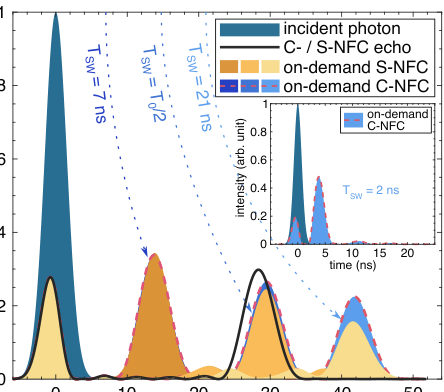
<figcaption class="paper-figure-caption"><b>Fig 4.</b> FIG. 3. On-demand echo retrieval for C-NFC (pink dashed line with blue-filled area) and S-NFC (red-filled area) by vary- ing Tsw from 7 ns to 21 ns, with ξeff = 6 and F = 30. The incident photon is illustrated in filled navy-blue area. The predetermined photon echo from static S-NFC or C-NFC (see the Supplementary Information [35]) without performing any switch operation is plotted in black solid line for compari- son. The inset shows an example of on-demand QM with an efficiency 57.65% and fidelity 96.87%, using the C-NFC con- figuration with ξeff = 7.8, F = 66, and a switching time of Tsw = 2 ns.</figcaption>
</figure>
<figure class="paper-figure-card">
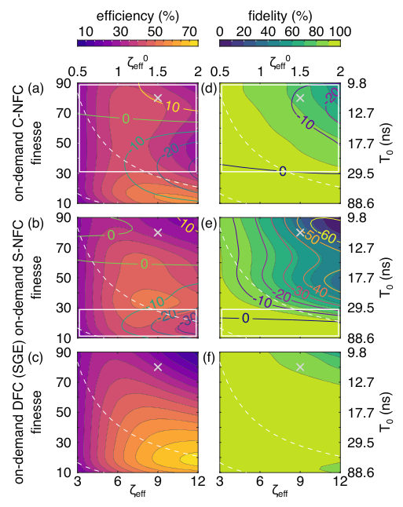
<figcaption class="paper-figure-caption"><b>Fig 5.</b> FIG. 4. Performance of on-demand hard X-ray quantum memory using 57Fe-based nuclear frequency combs. (a-c) Ef- ficiencies and (d-f) fidelities of on-demand storage for 15 ns of incident photons with Gaussian temporal wave form, char- acterized by a FWHM field duration ∆t = 8 ln(2)/(5∆ω +Γ). Results are shown for: (a, d) on-demand C-NFC, (b, e) on- demand S-NFC, and (c, f) on-demand 6-tooth D-NFC (SGE). Numbered solid-color contour lines in panels (a, b) and (d, e) represent the efficiency and fidelity differences, respectively, relative to the on-demand D-NFC results shown in (c) and (f). White boxes enclose regions corresponding to feasible hy- perfine magnetic fields in 57FeBO3, while...</figcaption>
</figure>
</div>

<p><strong>Summary.</strong> The paper proposes a magnetic-Doppler nuclear frequency comb memory for storing hard X-ray photons. It overcomes the difficulty of on-demand retrieval by introducing a mechanism that requires synchronously reversing both the internal magnetic field and absorber velocities. This hybrid approach significantly reduces mechanical complexity while maintaining high storage efficiency.</p>
<p><strong>Why it may be interesting.</strong> This work directly addresses quantum light storage and retrieval using solid-state systems, which is a major area of research at the intersection of AMO physics and quantum optics. The use of hyperfine structure to simplify mechanical requirements is particularly novel.</p>
<details>
<summary>Detailed structure</summary>
<p><strong>Main problem.</strong> The primary challenge addressed is achieving efficient, on-demand retrieval of hard X-ray photons stored in quantum memories.</p>
<p><strong>Main result.</strong> A hybrid magnetic-Doppler nuclear frequency comb protocol allows for on-demand storage and retrieval by synchronously reversing both the internal magnetic field and absorber velocities.</p>
<p><strong>Method.</strong> The method involves engineering a time-reversed phase evolution dynamic by controlling two external parameters (magnetic field and velocity) simultaneously, rather than relying solely on mechanical motion.</p>
<p><strong>Model / system.</strong> The system utilizes nuclear transitions in ${}^{57}	ext{FeBO}_3$ absorbers, forming a hybrid comb structure incorporating both Doppler shifts ($\Delta\omega_D$) from motion and hyperfine splittings ($\Delta\omega_Z$) from the strong internal magnetic field.</p>
<p><strong>Key observables.</strong> Storage efficiency ($\eta$), fidelity ($F$), bandwidth (e.g., $3\Delta\omega$ or $6\Delta\omega$), and the retrieval amplitude $  ext{B}_{    ext{out}}(t)$.</p>
<p><strong>Important parameters / regimes.</strong> The required simultaneous reversal of both hyperfine magnetic fields ($B_{	ext{hf}}$) and absorber velocities ($\mathbf{v}_n$). The efficiency can reach up to 54% under optimal conditions.</p>
<p><strong>Assumptions / limitations.</strong> On-demand retrieval necessitates the simultaneous reversal of both $B_{	ext{hf}}$ and $\mathbf{v}_n$; partial reversal is insufficient. Quadrupole interaction in ${}^{57}	ext{FeBO}_3$ can be neglected at low temperatures.</p>
<p><strong>Figures summary.</strong> Figures compare quantum memory efficiencies ($\eta$) and fidelities ($F$) for static vs. on-demand configurations (C-NFC, S-NFC, D-NFC), illustrating the performance gains from active switching.</p>
<p><strong>Paper structure.</strong> The paper first establishes the limitations of traditional Doppler frequency combs for on-demand retrieval. It then proposes and details the hybrid magnetic-Doppler NFC using ${}^{57}	ext{FeBO}_3$. The core mechanism involves deriving the time-reversed dynamics enabled by simultaneous field/velocity reversal, leading to performance comparisons between different comb configurations (C-NFC vs D-NFC).</p>
</details>
<details>
<summary>Abstract</summary>
<p>Nuclear quantum memories in the hard X-ray regime offer some key advantages over their optical counterparts, such as broader bandwidth and lower background noise. A Doppler frequency comb protocol has been theoretically proposed [X. Zhang \textit{et al.}, Phys. Rev. Lett. \textbf{123}, 250504 (2019)] and recently demonstrated experimentally [S. Velten \textit{et al.}, Sci. Adv. \textbf{10}, eadn9825 (2024)] for the storage and retrieval of X-ray photons. However, achieving on-demand retrieval remains challenging because of the requirement for precise and synchronous mechanical motion of multiple absorbers. We propose a hybrid, magnetic-Doppler nuclear frequency comb composed of Doppler-shifted resonant absorbers with lifted nuclear spin degeneracy, which expands the Doppler comb structure. By synchronously reversing the directions of both the magnetic fields and absorber velocities, the system achieves time-reversed phase evolution dynamics that allows for efficient on-demand photon retrieval with significantly reduced mechanical complexity.</p>
</details>
<p><sub><a href="#top">↑ back to top</a></sub></p>

<p><a id="paper-2608.09430"></a></p>
<h3 id="qtris-a-pedagogical-board-game-to-teach-quantum-mechanics"><a href="http://arxiv.org/abs/2608.09430v1">QTris: a pedagogical board game to teach Quantum Mechanics</a></h3>
<p><strong>Authors:</strong> Alessandro Amabile, Maria Bondani, Immacolata De Simone, Michela Nazzaro, Michele Viscardi, Alioscia Hamma<br>
<strong>Type:</strong> both · <strong>Category:</strong> quantum information and computing · <strong>PDF:</strong> <a href="https://arxiv.org/pdf/2608.09430v1">https://arxiv.org/pdf/2608.09430v1</a><br>
<strong>Analysis basis:</strong> full PDF text, analyzed in chunks
<strong>Topic relevance:</strong> <code>QC/QI experiment</code> <strong>2/5</strong> · <code>quantum measurements</code> <strong>2/5</strong> · <code>analog quantum simulation</code> <strong>1/5</strong></p>
<div class="figure-strip-hint">↔ Scroll figures horizontally</div>
<div class="paper-figures-scroll">
<figure class="paper-figure-card">

<figcaption class="paper-figure-caption"><b>Fig 1.</b> Figure 1: The 3x3 game board of QTris, the same as that of classical tic-tac-toe.</figcaption>
</figure>
<figure class="paper-figure-card">
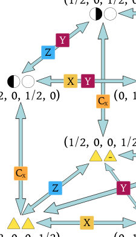
<figcaption class="paper-figure-caption"><b>Fig 2.</b> Figure 3: Cubic map of double-cell operations X, Y, Z, CX. The numbers in the parentheses (w, x, y, z), next to the symbols G##, G# , H# , H## and , , , , represent the probabilities of obtaining ##, # , #, respectively, after perform- ing a measurement. Two symbols on the same arrow mean that both operations achieve the same effect.</figcaption>
</figure>
<figure class="paper-figure-card">
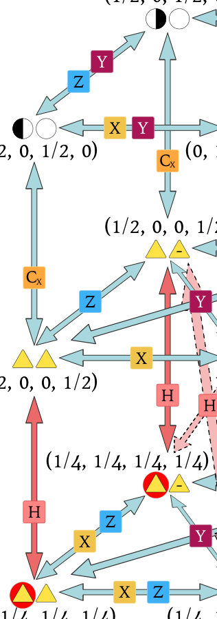
<figcaption class="paper-figure-caption"><b>Fig 3.</b> Figure 6: Map of all the operations allowed by using entangled states together with H and the corresponding probabilities for the outcomes {##, # , #, }. Two symbols on the same arrow mean that both operations achieve the same effect.</figcaption>
</figure>
<figure class="paper-figure-card">
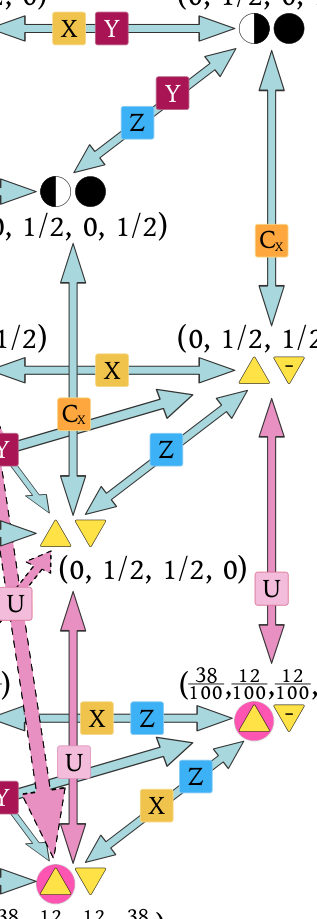
<figcaption class="paper-figure-caption"><b>Fig 4.</b> Figure 7: Map of all the operations allowed by using entangled states together with U and the corresponding probabilities for the outcomes {##, # , #, }. Two symbols on the same arrow mean that both operations achieve the same effect.</figcaption>
</figure>
<figure class="paper-figure-card">
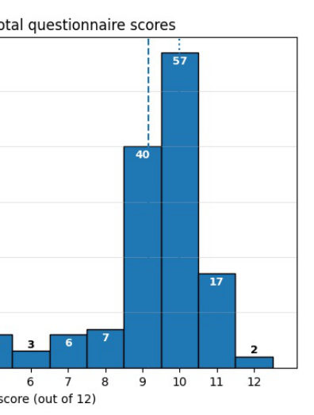
<figcaption class="paper-figure-caption"><b>Fig 5.</b> Figure 9: Score distribution over participants.</figcaption>
</figure>
</div>

<p><strong>Summary.</strong> This paper presents QTris, a board game designed as a pedagogical tool to teach Quantum Mechanics at the high-school level. It advocates for teaching QM using a qubit-first approach rather than historical narratives, focusing on core postulates like superposition and measurement. Preliminary testing suggests that this interactive game format is an effective way to build initial conceptual understanding of quantum principles.</p>
<p><strong>Why it may be interesting.</strong> While focused on pedagogy, the reliance on simulating quantum processes via qubits directly relates to foundational concepts in quantum information theory and computation that are relevant to AMO research.</p>
<details>
<summary>Detailed structure</summary>
<p><strong>Main problem.</strong> The primary goal is developing an effective, accessible pedagogical tool to teach abstract concepts of Quantum Mechanics (QM) to high-school students.</p>
<p><strong>Main result.</strong> The paper introduces QTris, a board game that successfully simulates core quantum processes using a qubit-first approach, showing preliminary evidence of its utility in promoting conceptual understanding.</p>
<p><strong>Method.</strong> The authors combine pedagogical theory (critiquing historical QM teaching) with empirical testing using student performance data from an educational activity based on the game mechanics.</p>
<p><strong>Model / system.</strong> The model is QTris, a board game designed to simulate quantum processes on a system of qubits, focusing specifically on two-state systems. The underlying physics concepts simulated include superposition, unitary transformations, and probabilistic measurement.</p>
<p><strong>Key observables.</strong> Student performance scores across conceptual and operational questions (Q1-Q12), measuring understanding of incompatibility and probabilistic outcomes.</p>
<p><strong>Important parameters / regimes.</strong> The system is restricted to the two-state qubit model for pedagogical simplicity; the activity involved approximately 150 high-school students.</p>
<p><strong>Assumptions / limitations.</strong> It assumes that restricting QM education to finite-dimensional Hilbert spaces (qubits) is sufficient and pedagogically sound, bypassing advanced mathematics like functional analysis.</p>
<p><strong>Figures summary.</strong> Figures show score distributions for conceptual vs. operational questions, and specific response distributions highlighting common student misconceptions regarding probabilities and outcomes.</p>
<p><strong>Paper structure.</strong> The paper first argues for a qubit-first pedagogical approach over historical narratives; it then details the QTris game rules and mechanics; finally, it reports on preliminary results from an educational activity using the game.</p>
</details>
<details>
<summary>Abstract</summary>
<p>In this paper we introduce the new version of QTris, a board game designed to teach and learn Quantum Mechanics within the framework of Quantum Information and Computation. The key idea behind the game is that every game sequence simulates a process on a system of qubits. Thus, QTris can be effectively integrated as a pedagogical tool to teach Quantum Mechanics at high-school level following a two-state approach. After arguing in support of this latter approach, we describe QTris' basic rules and some of its possible extensions, emphasizing how the game mechanics puts in clear light key quantum concepts such as incompatibility, probabilistic measurement and unitary transformation. Moreover, we report on the results of a QTris-based educational activity which involved about 150 high-school students and provided encouraging preliminary indications that QTris can be a useful pedagogical platform to promote an immediate understanding of some key concepts of Quantum Mechanics.</p>
</details>
<p><sub><a href="#top">↑ back to top</a></sub></p>

<p><a id="paper-2608.08666"></a></p>
<h3 id="a-systematic-comparison-of-q-gaussian-fitting-methods-across-complex-systems"><a href="http://arxiv.org/abs/2608.08666v1">A Systematic Comparison of q-Gaussian Fitting Methods across Complex Systems</a></h3>
<p><strong>Authors:</strong> Facundo Máximo Abaca, Darío Javier Zamora, Bruno S. Zossi, Ana G. Elias<br>
<strong>Type:</strong> theory · <strong>Category:</strong> statistical mechanics · <strong>PDF:</strong> <a href="https://arxiv.org/pdf/2608.08666v1">https://arxiv.org/pdf/2608.08666v1</a><br>
<strong>Analysis basis:</strong> full PDF text, analyzed in chunks
<strong>Topic relevance:</strong> <code>non-equilibrium universality</code> <strong>2/5</strong> · <code>driven-dissipative phase transition</code> <strong>1/5</strong> · <code>quantum measurements</code> <strong>1/5</strong></p>
<div class="figure-strip-hint">↔ Scroll figures horizontally</div>
<div class="paper-figures-scroll">
<figure class="paper-figure-card">
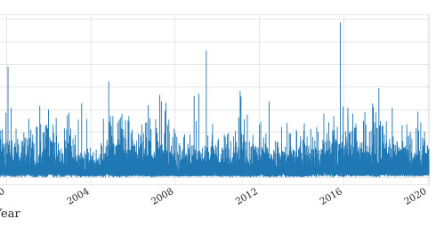
<figcaption class="paper-figure-caption"><b>Fig 1.</b> Figure 1: Values of proton density (Np), in the solar wind for 1980 to 2025.</figcaption>
</figure>
<figure class="paper-figure-card">
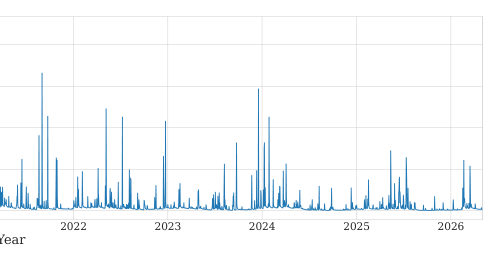
<figcaption class="paper-figure-caption"><b>Fig 2.</b> Figure 2: Closing values of bitcoin from 2016 to 2026.</figcaption>
</figure>
<figure class="paper-figure-card">
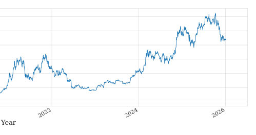
<figcaption class="paper-figure-caption"><b>Fig 3.</b> Figure 3: Discharge values of Brazos river for 2016 to 2026.</figcaption>
</figure>
<figure class="paper-figure-card">
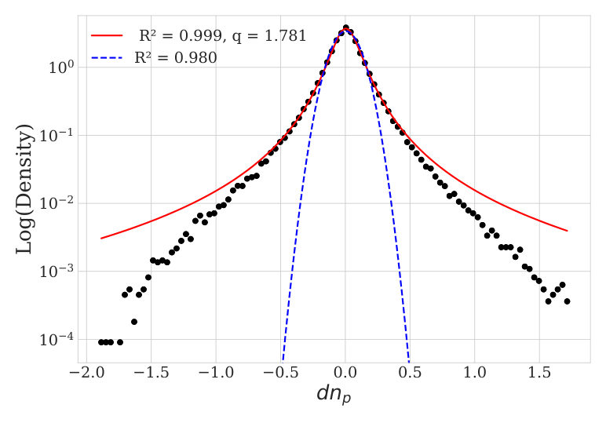
<figcaption class="paper-figure-caption"><b>Fig 4.</b> Figure 4: Comparison of the fit of the solar wind fluctuations histogram on a LOG scale.The red line is for the q-Gaussian distribution function and the blue one for the Gaussian distribution function.</figcaption>
</figure>
<figure class="paper-figure-card">
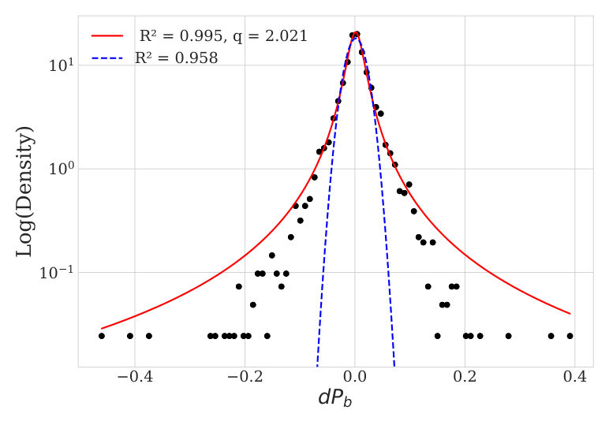
<figcaption class="paper-figure-caption"><b>Fig 5.</b> Figure 5: Comparison of the fit of logarithmic returns of the bitcoin prices fluctuations histogram on a LOG scale.</figcaption>
</figure>
</div>

<p><strong>Summary.</strong> This paper systematically compares three mathematical approaches—PDF fitting, linearization, and CDF fitting—to estimate the non-extensiveness parameter ($q$) characterizing heavy-tailed distributions in complex systems. By testing these methods on diverse data like solar wind and financial returns, the authors demonstrate that the CDF-based method yields more stable results, offering a robust tool for analyzing non-equilibrium physics.</p>
<p><strong>Why it may be interesting.</strong> While focused on classical statistical mechanics, the rigorous comparison of estimation techniques for heavy tails is methodologically valuable. The emphasis on bin-free methods echoes concerns in quantum information theory regarding noise modeling and parameter extraction from noisy measurements.</p>
<details>
<summary>Detailed structure</summary>
<p><strong>Main problem.</strong> The study addresses analyzing nonlinear, non-equilibrium phenomena characterized by heavy-tailed distributions that require non-extensive statistics.</p>
<p><strong>Main result.</strong> The analysis suggests that fitting the Cumulative Distribution Function (CDF) provides a significantly more stable estimate for the non-extensiveness parameter ($q$) compared to direct PDF or linearized methods.</p>
<p><strong>Method.</strong> A systematic comparison of three estimation techniques—direct nonlinear PDF fitting, q-logarithm linearization, and numerical CDF fitting—is employed across diverse datasets.</p>
<p><strong>Model / system.</strong> The analysis utilizes the q-Gaussian distribution, which is appropriate for systems exhibiting long-range correlations beyond standard Boltzmann-Gibbs statistics. Data sources include solar wind proton density, Bitcoin returns, and river discharge data.</p>
<p><strong>Key observables.</strong> The non-extensiveness parameter ($q$), fit quality metrics like $R^2$, and the estimated parameters $a$ and $b$.</p>
<p><strong>Important parameters / regimes.</strong> The entropic index $q$; sensitivity to histogram binning (number of bins).</p>
<p><strong>Assumptions / limitations.</strong> The primary assumption is that non-extensive statistics are appropriate for describing the observed fluctuations; a major limitation noted is the inherent subjectivity and noise associated with histogram binning.</p>
<p><strong>Figures summary.</strong> Figures compare $q$-Gaussian vs. Gaussian fits across three datasets (solar wind, Bitcoin, river discharge). Crucially, figures plot estimated $q$ versus the number of histogram bins for all three methods, highlighting method divergence.</p>
<p><strong>Paper structure.</strong> The paper introduces the need for non-extensive statistics, details the mathematical framework and three distinct fitting methodologies, applies these methods to multiple real-world datasets (geophysics, finance, hydrology), compares the results systematically, and concludes by advocating for the stability of the CDF approach.</p>
</details>
<details>
<summary>Abstract</summary>
<p>Nature exhibits a wide variety of nonlinear phenomena characterized by strong fluctuations that push the system away from equilibrium. Recent studies have shown that non-extensive statistics are more suitable for analyzing these phenomena, as they can capture long-range correlations and heavy-tailed distributions that conventional Boltzmann-Gibbs statistics cannot represent. However, estimating the non-extensiveness parameter ($q$) is not trivial, and methods vary significantly across disciplines.   This paper presents a systematic and interdisciplinary comparison of three fitting methods: direct nonlinear fitting of the probability distribution function (PDF), linearization using the q-logarithm function, and numerical fitting of the cumulative distribution function (CDF). We applied this analysis to various phenomena, from areas such as geophysics, space weather and economics, analyzing the critical impact of discretization. The results show that $q$ estimates are highly sensitive to histogram binning, while the CDF-based method provides a bin-free alternative that yields more stable estimates for the datasets analyzed here. This contribution provides relevant information for the search for a method that allows the correct determination of the parameters of heavy-tailed distributions in various disciplines.</p>
</details>
<p><sub><a href="#top">↑ back to top</a></sub></p>

<p><a id="paper-2608.08350"></a></p>
<h3 id="correlation-flow-governs-learning-at-criticality"><a href="http://arxiv.org/abs/2608.08350v1">Correlation flow governs learning at criticality</a></h3>
<p><strong>Authors:</strong> Andrea Combette, Nelly Pustelnik, Antoine Venaille<br>
<strong>Type:</strong> theory · <strong>Category:</strong> disordered systems and neural networks · <strong>PDF:</strong> <a href="https://arxiv.org/pdf/2608.08350v1">https://arxiv.org/pdf/2608.08350v1</a><br>
<strong>Analysis basis:</strong> full PDF text, analyzed in chunks
<strong>Topic relevance:</strong> <code>non-equilibrium universality</code> <strong>2/5</strong> · <code>Keldysh / 2PI / non-Gaussian methods</code> <strong>1/5</strong> · <code>driven-dissipative phase transition</code> <strong>1/5</strong></p>
<div class="figure-strip-hint">↔ Scroll figures horizontally</div>
<div class="paper-figures-scroll">
<figure class="paper-figure-card">
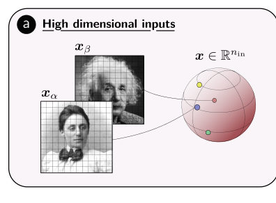
<figcaption class="paper-figure-caption"><b>Fig 1.</b> FIG. 1. Input dimensions. a) Example inputs represented as gridded pixel arrays, each encoded into a high-dimensional vector xα, xβ ∈Rnin with nin ≫1. b) Low-dimensional inputs ˜xα, ˜xβ ∈Rd</figcaption>
</figure>
<figure class="paper-figure-card">
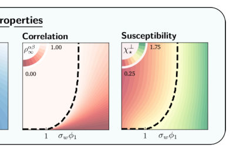
<figcaption class="paper-figure-caption"><b>Fig 2.</b> FIG. 2. The large depth limit. a) Phase diagram in the (σw, σb) parameter space, including ordered, chaotic, and vanishing variance phases, as well as the critical point. b) Fixed point behaviour of the variance K⋆, the correlation ραβ ∞and the perpendicular susceptibility χ⊥ ⋆in the (σw, σb) parameter space for a sinusoidal activation function. Computations are performed using (22).</figcaption>
</figure>
<figure class="paper-figure-card">
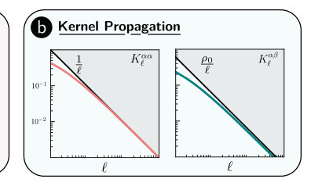
<figcaption class="paper-figure-caption"><b>Fig 3.</b> FIG. 3. Evolution of network properties with depth at criticality. a) Schematic illustration of the contraction of the pre-activation distribution zℓaround 0, leading to quasi-linear behaviour at large depths. b) Universal algebraic decay of Kαβ ℓ , shown for both α = β and α ̸= β, for the sine activation using the kernel recursion (22).</figcaption>
</figure>
<figure class="paper-figure-card">
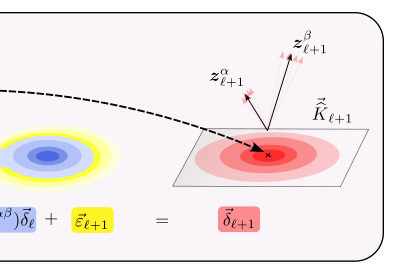
<figcaption class="paper-figure-caption"><b>Fig 4.</b> FIG. 4. Error Propagation. Schematic illustration of the propagation of the finite-size perturba- tions ⃗δℓthrough the network. The perturbations are transported by the tangent map JF along the mean-field covariance flow induced by F and driven by the layer-wise perturbations ⃗εℓ+1. For clarity, the vector notation ⃗ ( · ) refers to the quantities defined in (45).</figcaption>
</figure>
<figure class="paper-figure-card">
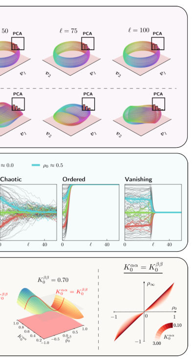
<figcaption class="paper-figure-caption"><b>Fig 5.</b> FIG. 5. Forward propagation. a) Evolution of a torus manifold, xα ∈T 2, ∀α ∈D, through a sinusoidal network. We project zℓfor every layer onto its first three principal components (v1, v2, v3). b) Empirical propagation of correlation with network depth, for different initialisation choices and different initial correlations. Colors associated with specific trajectories are used to ease visualization of correlation collapse or chaos. c) Evaluation of ηαβ ∞(ρ0, Kαα 0 , Kββ 0 ) = ραβ ∞−ραβ 0 for several input norms Kαα 0 , Kββ 0 and input correlations ραβ 0 in the Mean-field limit using (22).</figcaption>
</figure>
</div>

<p><strong>Summary.</strong> This theoretical work unifies information propagation and learning theory for infinitely wide, deep neural networks. It identifies a critical parameter regime where gradient flow is sustained to infinite depth. The key finding is the direct mathematical equivalence between the network's asymptotic correlation structure and its governing Neural Tangent Kernel.</p>
<p><strong>Why it may be interesting.</strong> While focused on deep learning, the mathematical machinery—analyzing spectral properties of large random matrices (Jacobian/NTK) in infinite limits—shares strong conceptual links with analyzing dynamics in complex disordered systems or spin-glass models.</p>
<details>
<summary>Detailed structure</summary>
<p><strong>Main problem.</strong> The paper aims to establish a unified theoretical framework connecting information/gradient propagation properties of deep neural networks to their learning dynamics.</p>
<p><strong>Main result.</strong> It proves that correlation propagation to infinite depth is only possible at a critical point, where the Neural Tangent Kernel (NTK) becomes exactly proportional to the output correlation at infinite depth.</p>
<p><strong>Method.</strong> The analysis combines mean-field theory and random matrix theory to derive recursive relations for network correlations and Jacobians in the limit of infinitely wide and deep networks.</p>
<p><strong>Model / system.</strong> The model is a deep neural network ($\Psi_	heta$) analyzed in the infinite-width (mean-field) and infinite-depth limits. The analysis focuses on how information propagates through layers governed by weight matrices and activation functions.</p>
<p><strong>Key observables.</strong> End-to-end Jacobian, Neural Tangent Kernel (NTK), output correlation matrix ($\Theta^L$), and their respective second moments.</p>
<p><strong>Important parameters / regimes.</strong> The critical point in the weight-bias variance plane; infinite width ($N 	o \infty$) and infinite depth ($L 	o \infty$).</p>
<p><strong>Assumptions / limitations.</strong> The analysis assumes specific moment concentration properties (e.g., empirical moments converge to ensemble averages) and relies on mild assumptions about the activation function.</p>
<p><strong>Paper structure.</strong> The paper progresses by first defining the problem in terms of information flow and learning dynamics, deriving recursive relations for correlations and Jacobians using mean-field theory, identifying the critical regime where propagation is possible, and finally proving the equivalence between NTK and correlation at this critical point.</p>
</details>
<details>
<summary>Abstract</summary>
<p>The initialisation of deep neural networks determines whether information and gradients can propagate across depth, yet a unified theory connecting these properties to learning dynamics remains elusive. Combining mean-field theory and random matrix theory, we establish a direct link between correlation propagation and the Neural Tangent Kernel (NTK) that governs learning in the sequential limit of infinitely wide, infinitely deep networks. Correlation propagation to infinite depth is possible only at a single critical point in the weight-bias variance plane. At this point, we show that the end-to-end Jacobian vanishes algebraically with depth, and use this to prove that the NTK becomes exactly proportional to the output correlation at infinite depth. This equivalence between information propagation and learning dynamics had not yet been noticed. We further show that orthogonal initialisation suppresses the leading finite-size corrections present under Gaussian initialisation, clarifying the respective roles of the two initialisation ensembles in this limit. These theoretical predictions are validated quantitatively on finite-width, finite-depth networks. Together, these results demonstrate that orthogonal initialisation at criticality plays a central role in controlling the asymptotic dynamics of deep learning.</p>
</details>
<p><sub><a href="#top">↑ back to top</a></sub></p>

<p><a id="paper-2608.09301"></a></p>
<h3 id="high-fidelity-controlled-phase-gates-for-distinguishable-quantum-walkers-via-extended-interactions"><a href="http://arxiv.org/abs/2608.09301v1">High-fidelity controlled-phase gates for distinguishable quantum walkers via extended interactions</a></h3>
<p><strong>Authors:</strong> Gaia Forghieri, Matteo G. A. Paris<br>
<strong>Type:</strong> theory · <strong>Category:</strong> quantum information and computing · <strong>PDF:</strong> <a href="https://arxiv.org/pdf/2608.09301v1">https://arxiv.org/pdf/2608.09301v1</a><br>
<strong>Analysis basis:</strong> full PDF text, analyzed in chunks
<strong>Topic relevance:</strong> <code>analog quantum simulation</code> <strong>2/5</strong> · <code>Frenkel-Kontorova</code> <strong>1/5</strong> · <code>Keldysh / 2PI / non-Gaussian methods</code> <strong>1/5</strong></p>
<div class="figure-strip-hint">↔ Scroll figures horizontally</div>
<div class="paper-figures-scroll">
<figure class="paper-figure-card">
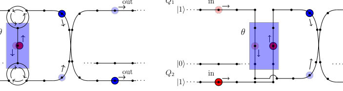
<figcaption class="paper-figure-caption"><b>Fig 1.</b> FIG. 1. Dual-rail implementations of a CP gate based on interacting quantum walkers, as described in the main text. In both panels, the logical state |1⟩of each qubit is routed through an interaction region (blue box), where the walkers acquire a conditional phase θ. (a) Implementation based on indistinguishable particles, following Ref. [34], where roundabout gates route the walkers onto a common path where the walkers can interact, and restore the original encoding afterwards. (b) Alternative implementation based on distinguishable particles propagating on parallel chains and interacting through a distance-dependent potential, eliminating the need for additional routing gates.</figcaption>
</figure>
<figure class="paper-figure-card">
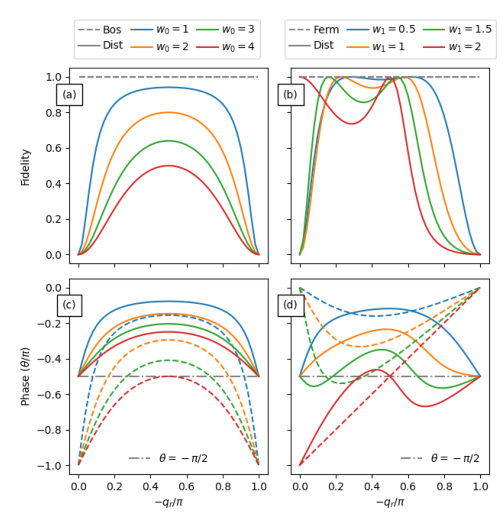
<figcaption class="paper-figure-caption"><b>Fig 2.</b> FIG. 2. Ideal CP gate performance for plane-wave scat- tering with q1 = −q2 = qr. (a) Fidelity and (c) induced phase for distinguishable particles (continuous lines) interact- ing through an on-site potential (C = 0), and comparison with the corresponding bosonic implementation (dashed lines). (b) Fidelity and (d) induced phase for distinguishable particles (continuous lines) with first-neighbor interactions (C = 1, w0 = w1), and comparison with the corresponding fermionic implementation.</figcaption>
</figure>
<figure class="paper-figure-card">
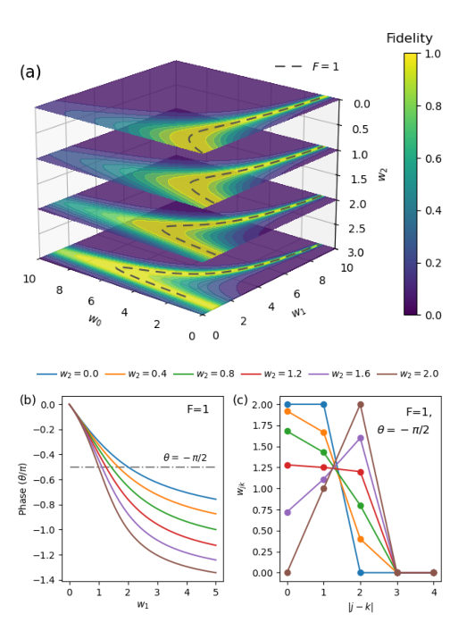
<figcaption class="paper-figure-caption"><b>Fig 3.</b> FIG. 3. Ideal CP gate performance for plane-wave scattering for distinguishable particles with interaction radius C = 2 and momenta q1 = −q2 = −π/2. (a) Fidelity as a function of the interaction terms w0, w1, and w2. The dashed grey curves indicate the loci of points for which F = 1 for each w2-plane. (b) Conditional phase θ accumulated along the unit-fidelity solutions. (c) Corresponding interaction profiles yielding θ = −π/2, required for the implementation of a CNOT gate.</figcaption>
</figure>
<figure class="paper-figure-card">
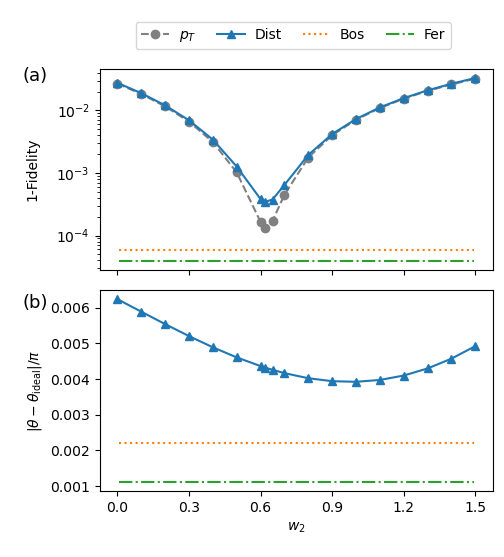
<figcaption class="paper-figure-caption"><b>Fig 4.</b> FIG. 4. Finite-wavepacket effects on the CP gate fidelity for Gaussian wavepackets with second-neighbor interactions and central momenta q1 = −q2 = −π/2. For each value of w2, the interaction parameters w0 and w1 are chosen as to reproduce the ideal unitary fidelity for an induced phase of θ = −π/2, as in Fig. 3(c). (a) Fidelity loss 1 −F of distinguishable par- ticles. The panel shows a comparison with the transmission loss 1 −pT of the gate, and with bosonic (on-site, w0 = 4) and fermionic (first-neighbor, w1 = 2) implementations. (b) Relative deviation of the accumulated phase from the ideal value θideal = −π/2.</figcaption>
</figure>
<figure class="paper-figure-card">
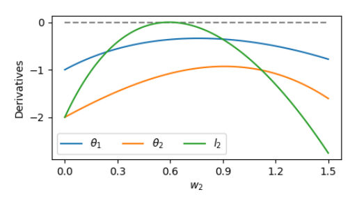
<figcaption class="paper-figure-caption"><b>Fig 5.</b> FIG. 5. Quantities governing the Gaussian-wavepacket fi- delity of the distinguishable-particle CP gate under the same conditions as Fig. 4. Shown are the effective interaction length θ1 (blue), the phase-curvature term θ2 (orange), and the logarithmic-magnitude curvature l2 (green), the latter two entering the approximated fidelity expression in Eq. (30). All quantities are evaluated at −qr = π/2, at which the logarithmiq-magnitude first derivative l1 is identically zero.</figcaption>
</figure>
</div>

<p><strong>Summary.</strong> This paper proposes a method to realize high-fidelity controlled-phase gates using interacting, distinguishable quantum walkers. By extending the interaction range beyond nearest neighbors, the authors demonstrate that this approach avoids significant fidelity losses inherent in previous designs for indistinguishable particles. The results establish multi-neighbor interactions as a powerful tool for building robust quantum information processing circuits with continuous-time quantum walks.</p>
<p><strong>Why it may be interesting.</strong> This work provides concrete guidelines for engineering quantum gates in continuous-time quantum walk models by showing how controlled interactions can overcome limitations associated with particle indistinguishability or complex physical routing.</p>
<details>
<summary>Detailed structure</summary>
<p><strong>Main problem.</strong> The primary goal is implementing high-fidelity controlled-phase (CP) gates using quantum walks.</p>
<p><strong>Main result.</strong> The proposed architecture using distinguishable particles with extended interactions achieves gate fidelities competitive with, or superior to, previous methods that suffered from fidelity losses due to complex routing gates.</p>
<p><strong>Method.</strong> The authors derive analytical approximations for gate fidelity by analyzing the scattering process of finite Gaussian wavepackets through interacting quantum walkers.</p>
<p><strong>Model / system.</strong> The system uses a dual-rail encoding where qubits are realized by quantum walkers on coupled chains. The Hamiltonian includes single-particle tight-binding terms and an extended, distance-dependent interaction term ($H_{int}$).</p>
<p><strong>Key observables.</strong> Gate fidelity (F), transmission coefficient magnitude and phase derivatives, and the total scattering amplitude $S_{tot}(k_1, k_2)$.</p>
<p><strong>Important parameters / regimes.</strong> Interaction range extension (multi-neighbor interactions), Gaussian wavepacket width ($\sigma$), and coupling strengths ($J$, $w$).</p>
<p><strong>Assumptions / limitations.</strong> The analysis moves from idealized plane-wave scattering to finite-size Gaussian wavepackets, requiring approximations for the final fidelity calculation.</p>
<p><strong>Figures summary.</strong> Figure 1 illustrates CP gate implementations using both indistinguishable (roundabout gates) and distinguishable particles on parallel chains. Figure 2 compares ideal CP gate performance across different interaction types.</p>
<p><strong>Paper structure.</strong> The paper first motivates the problem by comparing indistinguishable vs. distinguishable particle approaches, then develops the Hamiltonian formalism for interacting walkers, calculates scattering amplitudes using both plane-wave and Gaussian approximations, and finally derives the total gate fidelity based on these calculations.</p>
</details>
<details>
<summary>Abstract</summary>
<p>We investigate the implementation of controlled-phase (CP) gates with quantum walks in a dual-rail encoding through the use of interacting particles. While previous proposals have focused on indistinguishable particles (bosons or fermions) to achieve unitary fidelity for plane-wave scattering, practical implementations require finite-size wavepackets and routing through single-particle gates, both factors that introduce unavoidable fidelity losses. We show that extending the interaction range beyond on-site or first-neighbor terms provides sufficient control over the scattering potential to engineer CP gates with distinguishable particles that match the ideal bosonic/fermionic performance. For finite Gaussian wavepackets, we derive analytical approximations for the gate fidelity in terms of the transmission coefficient's magnitude and phase derivatives. We find that while distinguishable-particle scattering alone exhibits slightly lower fidelity than the indistinguishable case, the overall architecture that we propose avoids the additional single-particle gates required for routing indistinguishable particles. The roundabout gates needed for the latter indeed introduce fidelity losses approximately one order of magnitude larger than the interaction-induced losses, making the distinguishable-particle approach competitive for practical implementations. Our results establish multi-neighbor interactions as a tool for quantum information processing with continuous-time quantum walks and provide quantitative guidelines for optimizing gate fidelities in finite-size systems.</p>
</details>
<p><sub><a href="#top">↑ back to top</a></sub></p>

<p><a id="paper-2608.07990"></a></p>
<h3 id="metallic-gross-neveu-criticality-and-superconductivity-on-the-math913math-slac-fermion"><a href="http://arxiv.org/abs/2608.07990v1">Metallic Gross-Neveu criticality and superconductivity on the $\mathrm{SO}(3)$ SLAC fermion</a></h3>
<p><strong>Authors:</strong> Feng-Yu Zhang, Yin-Kai Yu, Zi-Xiang Li, Shuai Yin<br>
<strong>Type:</strong> both · <strong>Category:</strong> statistical mechanics · <strong>PDF:</strong> <a href="https://arxiv.org/pdf/2608.07990v1">https://arxiv.org/pdf/2608.07990v1</a><br>
<strong>Analysis basis:</strong> full PDF text, analyzed in chunks
<strong>Topic relevance:</strong> <code>analog quantum simulation</code> <strong>2/5</strong> · <code>driven-dissipative phase transition</code> <strong>1/5</strong> · <code>non-equilibrium universality</code> <strong>1/5</strong></p>
<div class="figure-strip-hint">↔ Scroll figures horizontally</div>
<div class="paper-figures-scroll">
<figure class="paper-figure-card">
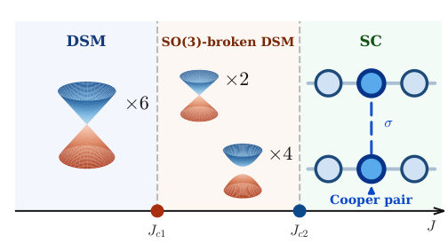
<figcaption class="paper-figure-caption"><b>Fig 1.</b> FIG. 1. Schematic ground-state phase diagram as a func- tion of J. The weak-coupling DSM contains six gapless Dirac cones. In the intermediate SO(3)-broken DSM, four cones are gapped while two remain gapless. At larger coupling, inter- layer Cooper pairing produces an SC phase. The transition at Jc1 is continuous, whereas the abrupt change at Jc2 strongly indicates a first-order transition.</figcaption>
</figure>
<figure class="paper-figure-card">
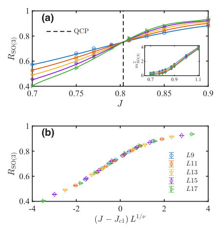
<figcaption class="paper-figure-caption"><b>Fig 2.</b> FIG. 2. Correlation ratio RSO(3) versus J for various sizes (equilibrium). Data points include error bars. (a) Estimate of the QCP from the size-independent crossings of R. The inset zooms in m2 SO(3) near Jc1. (b) Scaling collapse of R using the best-fit Jc1 and ν.</figcaption>
</figure>
<figure class="paper-figure-card">
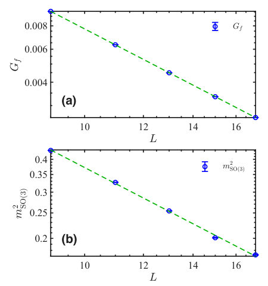
<figcaption class="paper-figure-caption"><b>Fig 3.</b> FIG. 3. (a) Log-log plot of the real-space fermion correlation Gf as a function of L. (b) Log-log plot of the squared order parameter m2 SO(3) as a function of L.</figcaption>
</figure>
<figure class="paper-figure-card">

<figcaption class="paper-figure-caption"><b>Fig 4.</b> Figure 2(a) shows the dependence of RSO(3) on J for different sizes L. To estimate the critical point and the correlation-length exponent more accurately, we follow the fitting procedure developed in Ref. [34]. Near the critical point, the scaling function is approximated by the polynomial fR  gL1/ν = Pnmax n=0 angnLn/ν. We fit the data for L = 9, 11, 13, 15, 17 over 0.70 ≤J ≤0.90. Among truncation orders 1 ≤nmax ≤5, the fifth-order polynomial gives the smallest root-mean-square residual. Statistical uncertainties are estimated from the disper- sion across 1000 Gaussian-resampled fits. As shown in Fig. 2(a), the solid curves represent the polynomial fits. Their intersection yields the...</figcaption>
</figure>
<figure class="paper-figure-card">

<figcaption class="paper-figure-caption"><b>Fig 5.</b> FIG. 4. The order parameters as functions of J, where the leg- end indicates the linear size L. (a) m2 SO(3) (left axis, dashed) and m2 SC (right axis, solid) on a dual-axis plot. (b) m2 U(1) versus J for different sizes.</figcaption>
</figure>
</div>

<p><strong>Summary.</strong> This work analyzes an $\mathrm{SO}(3)$-symmetric bilayer SLAC fermion model to explore its quantum phase diagram. Using QMC simulations, the authors identify a continuous transition into an $\mathrm{SO}(3)$-broken metallic state, followed by a distinct first-order transition into a novel superconducting phase. This provides new insights into Dirac criticality and unconventional superconductivity.</p>
<p><strong>Why it may be interesting.</strong> The study provides concrete numerical evidence for exotic critical points and superconductivity in strongly interacting fermions, which is highly relevant to understanding unconventional superconductors and quantum criticality beyond simple BCS theory.</p>
<details>
<summary>Detailed structure</summary>
<p><strong>Main problem.</strong> The study investigates Dirac criticality beyond standard universality classes and explores novel superconducting states within an interacting fermion model.</p>
<p><strong>Main result.</strong> The system exhibits a continuous phase transition belonging to the Gross-Neveu-$\mathrm{SO}(3)$ class, followed by a strong-coupling first-order quantum phase transition into an $\mathrm{SO}(3)$-symmetric superconducting state.</p>
<p><strong>Method.</strong> Large-scale Quantum Monte Carlo (QMC) simulations and Finite-Size Scaling (FSS) analysis were used to extract critical exponents and characterize the nature of the phase transitions.</p>
<p><strong>Model / system.</strong> The model is an $\mathrm{SO}(3)$-symmetric bilayer SLAC fermion system in $d=2$ dimensions, described by a Hamiltonian with tunable inter-layer interactions ($J$).</p>
<p><strong>Key observables.</strong> Structure factors for $\mathrm{SO}(3)$ symmetry breaking ($m^2_{\mathrm{SO}(3)}$), superconducting pairing order parameters ($m^2_{SC}$), and critical exponents ($
u, \eta_b$).</p>
<p><strong>Important parameters / regimes.</strong> Interaction strength $J$, which drives the system through three regimes: Dirac Semimetal (DSM) $    o$ SO(3)-broken DSM $   o$ SC.</p>
<p><strong>Assumptions / limitations.</strong> The QMC method is used to probe ground-state expectation values, and comparisons are made between QMC results (suggesting first-order transitions) and mean-field HFB calculations (suggesting continuous coexistence).</p>
<p><strong>Figures summary.</strong> Figures illustrate the phase diagram showing the sequence of transitions; specific plots show data collapse for critical exponents and the abrupt onset of superconducting order parameters at strong coupling.</p>
<p><strong>Paper structure.</strong> The paper systematically analyzes the system's behavior across increasing interaction strength $J$: first, characterizing the continuous transition to an $\mathrm{SO}(3)$-broken phase using QMC; second, investigating the nature of the subsequent strong-coupling instability into a superconducting state by comparing various pairing channels.</p>
</details>
<details>
<summary>Abstract</summary>
<p>The realization of Dirac criticality beyond the conventional Gross-Neveu-Yukawa (GNY) paradigm has become a major frontier in condensed matter physics. In this work, we introduce an $\mathrm{SO}(3)$-symmetric bilayer SLAC fermion model with tunable inter-layer interactions that exhibits a rich quantum phase diagram. As the interaction strength increases, the system undergoes two distinct phase transitions. The primary transition is a continuous boundary separating a Dirac semimetal (DSM) from an $\mathrm{SO}(3)$-broken ordered phase. Crucially, this transition evades the standard GNY universality class because the emergent order only gaps out a subset of the itinerant fermions. Using large-scale quantum Monte Carlo (QMC) simulations, we establish that this transition belongs to the Gross-Neveu-$\mathrm{SO}(3)$ universality class with $N=6$ irreducible Dirac cones and precisely extract the corresponding critical exponents. At stronger couplings, a second transition drives the system into an inter-layer $\mathrm{SO}(3)$-symmetric superconducting (SC) state. We provide strong numerical evidence that this transition is a quantum-fluctuation-driven first-order transition. Our study provides new insights into the exploration of Dirac criticality beyond the standard GNY universality class, and also offers a novel platform to realize superconductivity featuring $\mathrm{SO}(3)$ symmetry.</p>
</details>
<p><sub><a href="#top">↑ back to top</a></sub></p>

<p><a id="paper-2608.08215"></a></p>
<h3 id="opposite-post-processing-orders-of-fermionic-horizon-channels-and-their-quantum-resource-monotonicity"><a href="http://arxiv.org/abs/2608.08215v1">Opposite post-processing orders of fermionic horizon channels and their quantum-resource monotonicity</a></h3>
<p><strong>Authors:</strong> Shuhao Li, Jin-Ming Liu<br>
<strong>Type:</strong> theory · <strong>Category:</strong> other · <strong>PDF:</strong> <a href="https://arxiv.org/pdf/2608.08215v1">https://arxiv.org/pdf/2608.08215v1</a><br>
<strong>Analysis basis:</strong> full PDF text, analyzed in chunks
<strong>Topic relevance:</strong> <code>quantum measurements</code> <strong>2/5</strong> · <code>Keldysh / 2PI / non-Gaussian methods</code> <strong>1/5</strong> · <code>correlated / nonlocal dissipation</code> <strong>1/5</strong></p>
<div class="figure-strip-hint">↔ Scroll figures horizontally</div>
<div class="paper-figures-scroll">
<figure class="paper-figure-card">

<figcaption class="paper-figure-caption"><b>Fig 1.</b> Fig. 1 Schematic representation of the channel-to-functional ordering mechanism in multipartite homogeneous horizon sectors.</figcaption>
</figure>
<figure class="paper-figure-card">

<figcaption class="paper-figure-caption"><b>Fig 2.</b> Fig. 2 QJSD-based collective coherence for noisy GHZ and W inputs in the GHS spacetime with M = ω = 1. Subsystems A and B undergo the horizon transformation, while subsystem C remains unchanged. The left, middle, and right panels show the homogeneous exterior (ee), homogeneous interior (ii), and mixed exterior–interior (ei) configurations, respectively. The endpoint D = 1 represents the limiting value D →M−.</figcaption>
</figure>
</div>

<p><strong>Summary.</strong> This work develops a structural framework for analyzing quantum resources near black hole horizons by modeling the fermionic transformation as two complementary quantum channels: exterior and interior. The key finding is that these two channels exhibit opposite ordering behaviors with respect to a system parameter $q$. This reveals a universal channel-ordering structure responsible for predictable monotonicity in various quantum correlations.</p>
<p><strong>Why it may be interesting.</strong> It provides a structural theory for resource flow in curved spacetime, suggesting that the observed monotonic behavior is dictated by the underlying mathematical structure of the horizon channels rather than the specific physical measure used.</p>
<details>
<summary>Detailed structure</summary>
<p><strong>Main problem.</strong> To establish whether monotonic trends observed in relativistic quantum information near black holes stem from specific measurement choices or a universal underlying structural principle.</p>
<p><strong>Main result.</strong> The exterior and interior fermionic horizon channels exhibit opposite post-processing orders with respect to the channel parameter $q$, leading to predictable monotonicity for various state functionals.</p>
<p><strong>Method.</strong> Formulating the transformation as complementary quantum channels and analyzing their ordering properties using degradation preorders ($\succeq_{	ext{deg}}$) in both single-mode and multipartite settings.</p>
<p><strong>Model / system.</strong> The analysis is set in relativistic quantum information theory, specifically modeling fermionic modes near black hole horizons (e.g., GHS dilaton spacetime). The core mathematical tool is the effective single-mode fermionic horizon transformation parameterized by $q$.</p>
<p><strong>Key observables.</strong> Entanglement, occupation-basis coherence monotones, optimized Bell-functional quantities, and collective coherence based on Quantum Jensen-Shannon divergence (QJSD).</p>
<p><strong>Important parameters / regimes.</strong> The relativistic channel parameter $q$, which governs the relative weighting between accessible (exterior) and inaccessible (interior) quantum sectors.</p>
<p><strong>Assumptions / limitations.</strong> The framework assumes that the relevant mode transformation can be effectively described by a two-level system, allowing for the definition of complementary exterior and interior channels.</p>
<p><strong>Figures summary.</strong> Not specified in the notes, but numerical evaluation is performed on collective coherence in the GHS black hole spacetime to illustrate predicted homogeneous monotonicity.</p>
<p><strong>Paper structure.</strong> The paper first introduces the problem by noting ambiguity in resource trends. It then derives the complementary exterior and interior channels ($ ext{E}<em ext_in="ext{in">{    ext{out}}^q$ and $  ext{E}</em>^q$) and establishes their opposite ordering properties as $q$ changes. Finally, it generalizes this to multipartite settings and connects channel ordering directly to state functional monotonicity.}</p>
</details>
<details>
<summary>Abstract</summary>
<p>Relativistic quantum-information studies in noninertial and black-hole settings often determine resource behavior through explicit calculations for particular input states and state functionals, leaving unclear whether the recurring monotonic trends originate from those choices or from a common underlying structure. In this work, we formulate the effective single-mode fermionic horizon transformation as a pair of complementary exterior and interior quantum channels, corresponding respectively to the physically accessible and inaccessible sectors, and establish exact post-processing orders in opposite directions. As the relativistic channel parameter $q$ increases, the exterior channel becomes progressively degraded, whereas the interior channel is ordered in the reverse direction. These relations extend to arbitrary multipartite settings. Consequently, every state functional that is non-increasing under the corresponding intermediate maps is non-increasing in homogeneous exterior sectors and non-decreasing in homogeneous interior sectors. The framework therefore applies to broad classes of quantum resources and correlations, including entanglement and occupation-basis coherence monotones, optimized Bell-functional quantities, and contractive-divergence correlation measures. We further numerically evaluate collective coherence based on the quantum Jensen-Shannon divergence (QJSD) in the Garfinkle-Horowitz-Strominger (GHS) dilaton-black-hole spacetime, illustrating the predicted homogeneous monotonicity. The recurring trends are therefore traced to a common channel-ordering structure, while the physical setting determines the parameterization of $q$ and the resource-theoretic monotonicity determines which output-state quantities inherit the order.</p>
</details>
<p><sub><a href="#top">↑ back to top</a></sub></p>

<p><a id="paper-2608.09018"></a></p>
<h3 id="the-magic-scroll-leveraging-biased-noise-to-improve-magic-state-cultivation-in-register-based-architectures"><a href="http://arxiv.org/abs/2608.09018v1">The Magic Scroll: Leveraging biased noise to improve magic state cultivation in register-based architectures</a></h3>
<p><strong>Authors:</strong> Ian D. Thorvaldson, Jeffrey Marshall, Jack R. Craig, Samuel K. Gorman, Charles D. Hill, Michelle Y. Simmons<br>
<strong>Type:</strong> theory · <strong>Category:</strong> quantum information and computing · <strong>PDF:</strong> <a href="https://arxiv.org/pdf/2608.09018v1">https://arxiv.org/pdf/2608.09018v1</a><br>
<strong>Analysis basis:</strong> full PDF text, analyzed in chunks
<strong>Topic relevance:</strong> <code>QC/QI experiment</code> <strong>2/5</strong> · <code>correlated / nonlocal dissipation</code> <strong>1/5</strong> · <code>quantum measurements</code> <strong>1/5</strong></p>
<div class="figure-strip-hint">↔ Scroll figures horizontally</div>
<div class="paper-figures-scroll">
<figure class="paper-figure-card">

<figcaption class="paper-figure-caption"><b>Fig 1.</b> Figure 1: Comparison of simulated magic |T⟩state production using the Magic Scroll and Magic Scroll distillation. Here, we plot the magic state error as a function of expected volume of the Magic Scroll cultivation and distillation techniques explored in this work, over different cultivation sequences, final code distances and escape repetitions. For cultivation, each set of same-coloured, same-shape points represents a series of different complementary gap thresholds, with the highest error point representing no complementary gap. Simulation settings are notated here in the way specified in the main text Eq. 1 - for example, “d=5: g-s-dc-g-s-dc -&gt; 13x(7)11 r=3” indicates colour code...</figcaption>
</figure>
<figure class="paper-figure-card">

<figcaption class="paper-figure-caption"><b>Fig 2.</b> Figure 3: Overview of inter-register gates available in a two-qubit register architecture. Based off the capabilities of multi-nuclear spin registers in silicon, we show some exam- ples of operations that are possible between two-qubit reg- isters. For all examples shown here, it is possible to choose anti-controls wherever a control is present, or to freely change which qubit(s) are being operated on, without incurring any extra operational overhead. Under the assumption of multi- tone driving of electrons, each of the above operations is equally expensive to perform in terms of duration, with the exception of local CZ gates which are twice as fast as the rest. Note that all gates here...</figcaption>
</figure>
<figure class="paper-figure-card">

<figcaption class="paper-figure-caption"><b>Fig 3.</b> Figure 2: Overview of the multi-qubit register architec- ture, and the Magic Scroll cultivation it enables. (a) Illus- tration of connectivity present for multi-nuclear spin registers in silicon [8]. Open blue circles represent electron spin qubits, and filled black circles represent nuclear spin qubits. Two- qubit gates between nuclear spin qubits are mediated by the electrons. Each electron overlaps a few nuclear spin qubits, forming a qubit register, but neighbouring electrons are cou- pled (dashed lines) allowing inter-register operations. Typi- cally, the nuclear spins are operated as the sole data qubits, with electrons facilitating multi-qubit gates (both within a register [7], and...</figcaption>
</figure>
<figure class="paper-figure-card">

<figcaption class="paper-figure-caption"><b>Fig 4.</b> Figure 4: Implementation and performance of 6.6.6 and 4.8.8 colour codes using one- and two-qubit registers under biased noise. (a) Layout of alternating two-qubit and one-qubit registers with square connectivity capable of implementing a 6.6.6 colour code. The register outlines have been omitted for the single-qubit registers. Open circles represent 6.6.6 code ancilla qubits, while filled circuits represent 6.6.6 code data qubits. (b) 6.6.6 colour code stabilisers corresponding to the register layout in a). Each coloured face is stabilised with both X and Z type stabilisers. (c) Simulated threshold diagram of the 6.6.6 colour code shown in a-b using the noise model given in Table 1. Time...</figcaption>
</figure>
<figure class="paper-figure-card">

<figcaption class="paper-figure-caption"><b>Fig 5.</b> Figure 5: Implementation and performance of bilayer surface codes using 1- and 2-qubit registers under biased noise. (a) Layout of alternating grid of 2-qubit and 1-qubit registers used for implementing a bilayer surface code, as in Fig. 4a and d. Register outlines have been omitted for single-qubit registers, and the registers have square lattice connectivity. (b) Stabilisers of the bilayer surface code, hosting two surface codes, with the same register layout as per a). Note that each ancilla is responsible for at most two stabilisers, handling at most one Z-type and at most one X-type stabiliser. This allows stabilisers to be measured in two steps, first measuring all Z stabilisers in...</figcaption>
</figure>
</div>

<p><strong>Summary.</strong> This paper introduces the 'Magic Scroll,' a novel protocol for enhancing magic state generation in fault-tolerant quantum computing. It achieves this by combining color and bilayer error-correcting codes within multi-qubit register architectures that exploit intrinsic noise bias. The results demonstrate significant, quantifiable improvements (up to 3x) in both magic state cultivation and subsequent distillation volumes.</p>
<p><strong>Why it may be interesting.</strong> This work provides concrete, mathematically derived protocols that directly address resource limitations (magic state availability) in fault-tolerant quantum computation by integrating hardware constraints (connectivity) with noise characteristics (bias).</p>
<details>
<summary>Detailed structure</summary>
<p><strong>Main problem.</strong> The work aims to improve magic state cultivation and distillation procedures in fault-tolerant quantum computation by exploiting high qubit connectivity and intrinsic noise bias.</p>
<p><strong>Main result.</strong> The proposed 'Magic Scroll' procedure, combining color and bilayer codes, improves magic state cultivation volumes by a factor of 3x and enhances distillation performance similarly.</p>
<p><strong>Method.</strong> The authors develop efficient implementations for various error-correcting codes (e.g., color codes, bilayer codes) using two-qubit registers and leverage noise bias to enhance these procedures.</p>
<p><strong>Model / system.</strong> The theoretical framework is built upon multi-qubit register architectures, applicable to platforms like silicon phosphorus qubits or neutral atoms. The analysis focuses on implementing surface and color codes under a biased error model where bit-flip and phase-flip errors are unequal.</p>
<p><strong>Key observables.</strong> Magic |T&gt; state fidelities (achieving $10^{-9}$), improvement factors for cultivation/distillation volumes ($\sim 3	imes$), and logical error rates ($\epsilon$).</p>
<p><strong>Important parameters / regimes.</strong> Physical error rates ($p$) ranging from $0.05\%$ to $0.1\%$; the bias in noise (Z-errors); and code parameters like graph structures ($6.6.6$, $4.8.8$).</p>
<p><strong>Assumptions / limitations.</strong> The primary assumptions involve using multi-qubit registers for high connectivity, assuming a specific biased error model where idling errors are Z-biased, and employing empirical models for very large patch sizes.</p>
<p><strong>Figures summary.</strong> Figures illustrate the physical qubit layout of register models, the 'Magic Scroll' procedure combining different codes, performance scaling comparisons between methods at varying physical error rates, and approximations for gapped code performance.</p>
<p><strong>Paper structure.</strong> The paper progresses by first establishing the architectural basis (multi-qubit registers), then detailing the implementation of advanced codes using noise bias, introducing the 'Magic Scroll' procedure to combine these elements, and finally performing detailed performance analysis on distillation volumes using complementary gaps for large patches.</p>
</details>
<details>
<summary>Abstract</summary>
<p>Multiple quantum computing platforms across neutral atoms [1], nitrogen vacancy centres [2, 3], gate-defined dots [4-6] and 14|15 phosphorus atom qubits [7, 8] in silicon are experimentally exploring the use of high connectivity qubits, beyond that of nearest-neighbour planar lattices. Theoretical works consider modifications to fault-tolerant codes to leverage this higher qubit connectivity, such as non-local LDPC codes [9], inspiring superconducting [10] and photonic [11] platforms to also seek non-planar connectivity. In addition, separate theoretical works consider biased noise, where bit- and phase-flip errors are not equally likely. In this work, we present efficient methods for implementing 6.6.6 and 4.8.8 colour codes, as well as bilayer and folded surface codes, using two-qubit registers. We also leverage noise bias to avoid hook errors, demonstrating comparable performance to the surface code. By combining colour and bilayer codes, we show how magic state cultivation procedures [12-14] can be improved, in a procedure we refer to as the Magic Scroll. Not only does the Magic Scroll escape to a standard surface code, it also improves cultivation volumes by 3x and supports magic $|T\rangle$ state fidelities as low as $10^{-9}$. We show that this technique can be further leveraged to improve distillation performance, showing a 3x improvement to distillation volumes for error rates of $\sim 10^{-15}$. Through these constructions, we demonstrate techniques to leverage noise bias and high qubit connectivity, showing how register-based architectures can improve error rates and reduce quantum volumes in fault-tolerant quantum computing.</p>
</details>
<p><sub><a href="#top">↑ back to top</a></sub></p>

<p><a id="paper-2608.09625"></a></p>
<h3 id="a-design-space-study-of-density-matrix-parameterizations-for-diffusion-based-quantum-state-tomography"><a href="http://arxiv.org/abs/2608.09625v1">A Design Space Study of Density Matrix Parameterizations for Diffusion-Based Quantum State Tomography</a></h3>
<p><strong>Authors:</strong> Shuangju Chang<br>
<strong>Type:</strong> theory · <strong>Category:</strong> quantum information and computing · <strong>PDF:</strong> <a href="https://arxiv.org/pdf/2608.09625v1">https://arxiv.org/pdf/2608.09625v1</a><br>
<strong>Analysis basis:</strong> full PDF text, analyzed in chunks
<strong>Topic relevance:</strong> <code>quantum measurements</code> <strong>2/5</strong> · <code>methods for driven-dissipative</code> <strong>1/5</strong></p>
<div class="figure-strip-hint">↔ Scroll figures horizontally</div>
<div class="paper-figures-scroll">
<figure class="paper-figure-card">

<figcaption class="paper-figure-caption"><b>Fig 1.</b> Figure 1: Mean eigenvalue spectra of J⊤J for all seven parameterizations (log scale). Bloch shows flat spectrum at 1.0; Cholesky spans 2 orders of magnitude; log-Cholesky spans 4 orders.</figcaption>
</figure>
<figure class="paper-figure-card">

<figcaption class="paper-figure-caption"><b>Fig 2.</b> Figure 2: Parameterization selection decision tree for diffusion QST. Green = recommended; yellow = acceptable with caveats; red = avoid. The primary recommendation is Hermitian direct (unbounded domain, stable conditioning) or fix-trace (automatic trace, excellent isotropy).</figcaption>
</figure>
<figure class="paper-figure-card">

<figcaption class="paper-figure-caption"><b>Fig 3.</b> Figure 3: Effect of CFG weight on 2-qubit QST (Bloch parameterization). Each curve shows fidelity vs. shots for a fixed w. Low-shot regimes benefit from stronger guidance; w = 3–4 offers the best overall tradeoff.</figcaption>
</figure>
<figure class="paper-figure-card">

<figcaption class="paper-figure-caption"><b>Fig 4.</b> Figure 4: Fidelity vs. CFG weight at each shot level. The optimal w shifts from ≈3 (low shots) to ≈2 (high shots), suggesting shot-adaptive CFG as a future improvement.</figcaption>
</figure>
<figure class="paper-figure-card">

<figcaption class="paper-figure-caption"><b>Fig 5.</b> Figure 5: Training dynamics by parameterization. Herm B (2.0×) converges faster and achieves higher final fidelity than Bloch (1.0×), despite worse nominal isometry.</figcaption>
</figure>
</div>

<p><strong>Summary.</strong> This paper provides a comprehensive design space study comparing various mathematical parameterizations used to represent density matrices in Quantum State Tomography. By analyzing geometric conditioning metrics derived from the Jacobian Gram matrix, the authors show that theoretical elegance is insufficient for selecting an optimal method. They provide actionable guidelines favoring better-conditioned parameterizations for robust QST implementation.</p>
<p><strong>Why it may be interesting.</strong> This work directly addresses the practical implementation challenges of quantum state reconstruction by providing quantitative geometric tools to guide the choice of mathematical representation for complex quantum states.</p>
<details>
<summary>Detailed structure</summary>
<p><strong>Main problem.</strong> The study aims to systematically evaluate and select optimal parameterizations (coordinate charts) for density matrices when using diffusion models for Quantum State Tomography (QST).</p>
<p><strong>Main result.</strong> No single parameterization optimizes both geometric conditioning and physical constraint satisfaction, and end-to-end training confirms that better-conditioned parameterizations converge faster and achieve higher fidelity without Classifier-Free Guidance.</p>
<p><strong>Method.</strong> The authors introduce a geometric framework using the Jacobian Gram matrix (J^T J) to quantify conditioning via Spectral Dynamic Range and Diagonal Anisotropy, comparing results across seven candidate parameterizations.</p>
<p><strong>Model / system.</strong> The system is the reconstruction of an unknown quantum state $\rho$ (a positive semidefinite, unit-trace Hermitian matrix) from measurement statistics using diffusion-based generative models.</p>
<p><strong>Key observables.</strong> Spectral Dynamic Range ($\kappa_{	ext{spec}}$), Diagonal Anisotropy ($\kappa_{	ext{diag}}$), Fidelity ($F$), and training convergence speed.</p>
<p><strong>Important parameters / regimes.</strong> Number of qubits (2- and 3-qubit scales); Classifier-Free Guidance weight ($w$); Measurement consistency loss ($\lambda_{	ext{meas}}$).</p>
<p><strong>Assumptions / limitations.</strong> The analysis relies on numerical calibration using finite differences; the performance ranking reverses under CFG due to amplified boundary effects.</p>
<p><strong>Figures summary.</strong> Figures compare eigenvalue spectra, show parameterization selection decision trees, and plot fidelity vs. CFG weight or training dynamics for various methods.</p>
<p><strong>Paper structure.</strong> The paper establishes the need for systematic evaluation, introduces geometric diagnostics (J^T J), compares multiple parameterizations across 2- and 3-qubit scales using these metrics, validates findings via end-to-end training, and concludes with actionable selection guidelines.</p>
</details>
<details>
<summary>Abstract</summary>
<p>Diffusion-based quantum state tomography (QST) has shown promising results, but all existing methods implicitly adopt a single parameterization---typically Cholesky---without systematic evaluation. We present a design space study of density matrix parameterizations for diffusion QST, introducing a geometric framework based on the Jacobian Gram matrix $\mathbf{J}^\top\mathbf{J}$ that quantifies two competing criteria: isometric conditioning and physical constraint satisfaction. Our calibration of seven parameterizations at 2- and 3-qubit scales reveals three key findings. First, isometry and constraints are orthogonal criteria---no single parameterization optimizes both. Second, theoretical elegance does not predict geometric quality: the exponential map exhibits a spectral range of $149\times$ at 2 qubits and $75\,658\times$ at 3 qubits, while simpler parameterizations remain well-conditioned. Third, geometric conditioning alone does not fully predict end-to-end performance: without classifier-free guidance (CFG), Hermitian direct outperforms Bloch despite worse local isometry; under CFG, the ranking reverses due to amplified boundary effects. End-to-end training confirms that better-conditioned parameterizations converge faster and achieve higher fidelity in the absence of CFG. We provide actionable selection guidelines to guide future QST method design.</p>
</details>
<p><sub><a href="#top">↑ back to top</a></sub></p>

<p><a id="paper-2608.09913"></a></p>
<h3 id="from-koszul-complex-stabilizer-models-to-superselection-profiles-topological-rigidity-and-nonsplit-extensions"><a href="http://arxiv.org/abs/2608.09913v1">From Koszul-Complex Stabilizer Models to Superselection Profiles: Topological Rigidity and Nonsplit Extensions</a></h3>
<p><strong>Authors:</strong> Hao Song<br>
<strong>Type:</strong> theory · <strong>Category:</strong> strongly correlated electrons · <strong>PDF:</strong> <a href="https://arxiv.org/pdf/2608.09913v1">https://arxiv.org/pdf/2608.09913v1</a><br>
<strong>Analysis basis:</strong> full PDF text, analyzed in chunks
<strong>Topic relevance:</strong> <code>analog quantum simulation</code> <strong>2/5</strong> · <code>quantum measurements</code> <strong>1/5</strong></p>
<div class="figure-strip-hint">↔ Scroll figures horizontally</div>
<div class="paper-figures-scroll">
<figure class="paper-figure-card">

<figcaption class="paper-figure-caption"><b>Fig 1.</b> FIG. 2. Stabilizer generators for the three-dimensional degree-1 toric code, TC(3) 1 (ZN), where physical qudits reside on the lattice edges. The reference edges are denoted by e1, e2, and e3. (a) The star (X- type) check operator, defined by the adjoint map φX = ∂† 1, acts on the six edges incident to a central vertex. (b) The plaquette (Z-type) check operator, defined by the differential φZ = ∂2, acts on the four edges bounding a plaquette, as illustrated for the yz-plane basis ele- ment e23 B e2 ∧e3.</figcaption>
</figure>
<figure class="paper-figure-card">

<figcaption class="paper-figure-caption"><b>Fig 2.</b> FIG. 3. (a) Plaquette terms of the 3D toric code model. (b) A loop excitation created by a membrane operator. (c) The topological ob- struction to cutting the loop excitation open.</figcaption>
</figure>
</div>

<p><strong>Summary.</strong> This theoretical work develops an advanced algebraic framework using 'superselection profiles' to classify translation-symmetry-enriched topological phases in stabilizer codes. It proves that while local excitation data can determine the code class under certain conditions (rigidity), the full topological information resides in how these layers are glued together, revealing subtle differences between seemingly identical models.</p>
<p><strong>Why it may be interesting.</strong> While highly mathematical, the rigorous classification of topological phases in stabilizer models provides deep insights into how local measurements (like those achievable with limited qubits or interactions) constrain global quantum properties, which is relevant to understanding emergent order in strongly correlated materials.</p>
<details>
<summary>Detailed structure</summary>
<p><strong>Main problem.</strong> The paper aims to classify translation-symmetry-enriched topological (SET) phases in stabilizer codes by determining how much of the SET order is fixed solely by its local excitation data.</p>
<p><strong>Main result.</strong> It establishes a topological rigidity theorem showing that for single-layer profiles, the excitation structure uniquely determines the stable translation-invariant Clifford class. However, inter-layer gluing can carry distinct SET information invisible to individual layers.</p>
<p><strong>Method.</strong> The authors introduce the topological superselection profile $\mathscr S_\sigma$ and use its cohomology layers $E^l_\sigma$ to encode excitation data, employing a matrix-level Schanuel-lemma method for classification.</p>
<p><strong>Model / system.</strong> The study focuses on translation-invariant Calderbank–Shor–Steane (CSS) stabilizer codes, particularly those derived from Koszul-complex models which unify the toric-code hierarchy and bivariate-bicycle codes.</p>
<p><strong>Key observables.</strong> Topological superselection profile $\mathscr S_\sigma$, cohomology layers $E^l_\sigma$ encoding sectors and fusion, and ground-state degeneracies.</p>
<p><strong>Important parameters / regimes.</strong> The analysis distinguishes between single-layer profiles (where only one $E^l_\sigma$ is nonzero) and multi-layer extensions, as well as the finite-resolution hypothesis required for rigidity.</p>
<p><strong>Assumptions / limitations.</strong> The topological rigidity theorem relies on a finite-resolution hypothesis; the initial analysis focuses on finitely supported Pauli operators due to the structure of the underlying group ring $R$.</p>
<p><strong>Paper structure.</strong> The paper develops an algebraic formalism for CSS codes using superselection profiles, proves rigidity theorems under certain hypotheses, and then examines cases where inter-layer gluing reveals SET data beyond what individual layers can classify.</p>
</details>
<details>
<summary>Abstract</summary>
<p>Koszul-complex stabilizer models unify the toric-code hierarchy and bivariate-bicycle codes in one homological framework. To study translation-symmetry-enriched topological (SET) phases in these models and, more generally, in translation-invariant Calderbank-Shor-Steane (CSS) codes with stabilizer maps $(\varphi_X,\varphi_Z)$, we introduce the associated topological superselection profile $\mathscr S_σ:=τ_{\geq1}\mathbf R\!\operatorname{Hom}_R(\overline{\operatorname{coker}\varphi_σ},R),\ σ=X,Z$. Its cohomology layers $E_σ^\ell:=H^\ell(\mathscr S_σ)\cong_R\operatorname{Ext}_R^\ell(\overline{\operatorname{coker}\varphi_σ},R)$ encode sectors, fusion, and translation action. When finite, the $\ell=1,2,\ldots$ layers describe pointlike, looplike, and higher-dimensional excitations; $\mathscr S_σ$ retains inter-layer gluing. For regular Koszul models, we compute $E_σ^\ell$ explicitly, find $\mathscr S_σ$ single-layer, and obtain finite-size $Z$-logicals from $\operatorname{Tor}$. Single-layer means that at most one positive-degree layer $E_σ^\ell$ is nonzero. Our matrix-level Schanuel-lemma method proves rigidity: under a finite-resolution hypothesis, the nonzero layer and degree uniquely determine a topological CSS code's translation SET order at the stable translation-invariant Clifford level. For prime qudits the hypothesis is automatic, and a finite layer's translation kernel gives the exact minimal coarse graining to a toric-code stack. We realize admissible single-layer data. Beyond this regime, split and nonsplit extensions of 3D qubit toric codes yield eight models sharing all identical $E_σ^\ell$ layers with trivial translation action but having distinct size-dependent ground-state degeneracies, hence distinct translation SET phases. Thus inter-layer gluing carries SET data invisible to individual layers.</p>
</details>
<p><sub><a href="#top">↑ back to top</a></sub></p>

<p><a id="paper-2608.08329"></a></p>
<h3 id="randomness-certification-and-trade-offs-in-the-prepare-and-broadcast-scenario"><a href="http://arxiv.org/abs/2608.08329v1">Randomness Certification and Trade-offs in the Prepare-and-Broadcast Scenario</a></h3>
<p><strong>Authors:</strong> Tailan S. Sarubi, Moisés Alves, Vinícius F. Alves, Santiago Zamora, Diogo H. G. Duarte, A. de Oliveira Junior, Rafael Chaves<br>
<strong>Type:</strong> theory · <strong>Category:</strong> quantum information and computing · <strong>PDF:</strong> <a href="https://arxiv.org/pdf/2608.08329v1">https://arxiv.org/pdf/2608.08329v1</a><br>
<strong>Analysis basis:</strong> full PDF text, analyzed in chunks
<strong>Topic relevance:</strong> <code>quantum measurements</code> <strong>2/5</strong> · <code>Keldysh / 2PI / non-Gaussian methods</code> <strong>1/5</strong></p>
<div class="figure-strip-hint">↔ Scroll figures horizontally</div>
<div class="paper-figures-scroll">
<figure class="paper-figure-card">

<figcaption class="paper-figure-caption"><b>Fig 1.</b> FIG. 1. PAB scenario. In each run, the preparation device receives an input x ∈X, prepares a quantum state that undergoes a broadcast- ing map that distributes it to two spatially separated measurement de- vices, receiving inputs y ∈Y and z ∈Z and producing local outputs b ∈B and c ∈C, respectively. The PAB scenario is thus described by a probability distribution p(b, c|x, y, z). Notice that if one of the par- ties is traced out, for instance, Charlie, one recovers the usual PAM scenario, described by a probability distribution p(b|x, y)</figcaption>
</figure>
<figure class="paper-figure-card">

<figcaption class="paper-figure-caption"><b>Fig 2.</b> FIG. 2. Trade-offs between PAM and Bell witnesses in the PAB scenario. Panels (a) and (b) show the trade-off between Charlie’s marginal PAM witness and the CHSH value evaluated by Bob and Charlie conditional on Alice’s preparation input: (a) CHSH[1] BC versus S (C) 3 , and (b) CHSH[3] BC versus S (C) 4 . For S 3, the choice x = 1 is representative of the equivalence class x ∈{0, 1}. For S 4, all four conditioning inputs are equivalent under relabelings, and x = 3 is chosen as a representative. Panels (c) and (d) show marginal receiver–receiver trade-offs: (c) S (B) 3 versus S (C) 3 , and (d) S (B) 3 versus S (C) 4 . The pale-orange rectangles mark the regions in which both plotted...</figcaption>
</figure>
<figure class="paper-figure-card">

<figcaption class="paper-figure-caption"><b>Fig 3.</b> FIG. 3. Marginal QRAC trade-off in the PAB scenario. The curve shows the possible pairs of success probabilities (PB, PC) for Bob and Charlie in the broadcast 2 →1 QRAC. The inner approxima- tion obtained from explicit strategies through the support-function method coincides, up to numerical precision, with the outer approxi- mation given by the (1, 2) level of the SDP relaxation. The boundary is the same as the trade-off for optimal asymmetric phase-covariant cloning: if one receiver beats the classical QRAC value 3</figcaption>
</figure>
<figure class="paper-figure-card">

<figcaption class="paper-figure-caption"><b>Fig 4.</b> FIG. 4. Randomness from the S 3 and S 4 witnesses in the PAM scenario. Certified min-entropy of Bob’s outcome at the genera- tion input (x⋆, y⋆) = (2, 1) as a function of the visibility v for the witnesses S 3 and S 4, at the L(1, 2) relaxation level. For each wit- ness, we show the witness-only certificate of Eq. (24) and the fixed- distribution certificate of Eq. (26). For S 3, the fixed-distribution cer- tificate reaches one full bit at v = 1, whereas for S 4 the bias of the optimal realization at the same generation input limits the certifiable randomness to approximately 0.228 bits. The vertical lines mark the minimum visibility required for each curve to certify nonzero ran- domness.</figcaption>
</figure>
<figure class="paper-figure-card">

<figcaption class="paper-figure-caption"><b>Fig 5.</b> Figure 4 collects the resulting certificates as functions of the visibility v. Two features stand out. First, for S 3, the fixed- distribution certificate reaches one full bit at v = 1, the alge- braic maximum for a binary outcome, in agreement with the unbiased marginal of the optimal realization at the input (2, 1). Second, away from the endpoint, the two protocols separate, with the fixed-distribution curve lying above the witness-only envelope over a wide range of visibilities and becoming non- trivial at a lower visibility threshold. The witness value is therefore a valid but strictly lossy summary of the data for ran- domness purposes. The witness S 4 shows the complementary lesson....</figcaption>
</figure>
</div>

<p><strong>Summary.</strong> This work analyzes the Prepare-and-Broadcast (PAB) scenario to quantify fundamental trade-offs between nonclassical resources like Bell violations and random number generation. It develops a semi-device-independent framework proving that the maximal quantum advantage certifies two bits of joint randomness, surpassing classical bounds in a robust manner.</p>
<p><strong>Why it may be interesting.</strong> While focused on QI theory, the rigorous mathematical tools used to bound correlations and certify randomness are highly relevant to understanding resource constraints in complex open quantum systems or multi-partite entanglement verification.</p>
<details>
<summary>Detailed structure</summary>
<p><strong>Main problem.</strong> The paper investigates fundamental trade-offs between prepare-and-measure witnesses, Bell nonlocality, and quantum random access code performance within the multipartite Prepare-and-Broadcast (PAB) scenario.</p>
<p><strong>Main result.</strong> They derive quantitative relationships showing that the maximal quantum violation in PAB certifies two bits of joint randomness, exceeding classical limits like CHSH, and establishes a semi-device-independent framework robust to noise.</p>
<p><strong>Method.</strong> The analysis employs geometric criteria derived from convex polytopes, semidefinite programming relaxations, and advanced techniques involving block decomposition and projection operators on quantum states.</p>
<p><strong>Model / system.</strong> The core model is the Prepare-and-Broadcast (PAB) scenario, a multipartite extension of prepare-and-measure experiments where a prepared state is distributed to multiple spatially separated receivers. The analysis uses qubits and probability distributions $p(b|x, y)$.</p>
<p><strong>Key observables.</strong> Prepare-and-measure witnesses ($S_3, S_4$), Bell nonlocality violations (CHSH), joint output randomness (in bits), and QRAC success probabilities.</p>
<p><strong>Important parameters / regimes.</strong> The dimensionality of the system ($d$), the number of preparations (three or four), and the specific constraints imposed by the PAB structure.</p>
<p><strong>Assumptions / limitations.</strong> Assumptions include focusing on binary PAM scenarios, comparing explicit qubit strategies against SDP relaxations, and analyzing idealized quantum correlations.</p>
<p><strong>Figures summary.</strong> Figure 1 illustrates the general PAB setup (preparation $
ightarrow$ broadcasting $
ightarrow$ multiple measurements). Figure 2 details trade-offs between different types of nonclassicality witnesses in the PAB context.</p>
<p><strong>Paper structure.</strong> The paper systematically develops criteria for classical compatibility, establishes quantitative trade-off boundaries between various quantum advantages (witnesses vs. Bell violations), and culminates in developing a semi-device-independent framework for randomness certification against adversarial side information.</p>
</details>
<details>
<summary>Abstract</summary>
<p>We investigate the prepare-and-broadcast scenario, a multipartite extension of dimension-constrained prepare-and-measure experiments in which a quantum system is distributed to multiple receivers. We derive fundamental trade-offs between prepare-and-measure witnesses, Bell nonlocality, and quantum random access code performance. We further develop a semi-device-independent randomness certification framework based on prepare-and-broadcast witnesses, showing that the maximal quantum violation certifies two bits of joint randomness, exceeding the limit achievable from the CHSH inequality while remaining robust to noise. Finally, we show that the prepare-and-broadcast scenario naturally accommodates stronger adversarial models in which the eavesdropper retains a quantum system correlated with the measurement device, providing a natural framework for semi-device-independent randomness certification against quantum side information.</p>
</details>
<p><sub><a href="#top">↑ back to top</a></sub></p>

<p><a id="paper-2608.09667"></a></p>
<h3 id="characterising-the-set-of-deterministic-quantum-correlations-in-prepare-and-measure-scenarios"><a href="http://arxiv.org/abs/2608.09667v1">Characterising the set of deterministic quantum correlations in prepare-and-measure scenarios</a></h3>
<p><strong>Authors:</strong> Nicola D'Alessandro, Oliver Karlsson, Carles Roch i Carceller<br>
<strong>Type:</strong> theory · <strong>Category:</strong> quantum information and computing · <strong>PDF:</strong> <a href="https://arxiv.org/pdf/2608.09667v1">https://arxiv.org/pdf/2608.09667v1</a><br>
<strong>Analysis basis:</strong> full PDF text, analyzed in chunks
<strong>Topic relevance:</strong> <code>quantum measurements</code> <strong>2/5</strong></p>
<div class="figure-strip-hint">↔ Scroll figures horizontally</div>
<div class="paper-figures-scroll">
<figure class="paper-figure-card">

<figcaption class="paper-figure-caption"><b>Fig 1.</b> FIG. 1: Adversarial prepare-and-measure scenario. The adversary is correlated through the hidden-variable λ distributed among the devices. The communication is bound to satisfy the restriction S.</figcaption>
</figure>
<figure class="paper-figure-card">

<figcaption class="paper-figure-caption"><b>Fig 2.</b> FIG. 2: Classical models based on predictable measurement outcomes. a) Critical visibility above which two qubit states cannot generate classical correlations. b) Value of W5 above which a classical model is ruled out for n∗inputs and preparations with bounded pair-wise overlaps. c) Value of W4 above which a classical model is ruled out for n∗</figcaption>
</figure>
</div>

<p><strong>Summary.</strong> This paper develops a comprehensive framework to test whether observed correlations in prepare-and-measure quantum experiments can be explained by deterministic classical models. It achieves this by formulating constraints derived from three distinct physical assumptions—fixed ensembles, bounded overlaps, and restricted observables—into solvable Semidefinite Programs (SDPs). Success in solving the SDP implies determinism; failure proves genuine non-classicality.</p>
<p><strong>Why it may be interesting.</strong> This work provides rigorous mathematical tools (SDP hierarchies) to quantify non-classicality in fundamental quantum tasks, which is crucial for understanding the resource theory aspects of quantum information processing beyond simple entanglement measures.</p>
<details>
<summary>Detailed structure</summary>
<p><strong>Main problem.</strong> The core problem is characterizing the set of deterministic quantum correlations achievable in prepare-and-measure scenarios and developing methods to certify when observed correlations violate these deterministic bounds.</p>
<p><strong>Main result.</strong> The authors propose using Semidefinite Programming (SDP) relaxations tailored to specific communication restrictions (fixed ensemble, bounded overlaps, restricted observables) to test for determinism. Infeasibility of the resulting SDP proves non-classicality.</p>
<p><strong>Method.</strong> The methodology involves formulating the problem as determining if observed correlations admit a deterministic explanation by introducing an adversary with full knowledge of shared randomness $\lambda$. This leads to solving feasibility problems via specialized SDP relaxations (e.g., Block Moment Matrix, Gram matrix).</p>
<p><strong>Model / system.</strong> The system is the prepare-and-measure scenario involving two parties (Alice and Bob), where Alice prepares states $
ho_{\lambda}^x$ based on shared randomness $\lambda$, and Bob performs measurements $\{M_{\lambda}^b|y\}_b$. The analysis adapts techniques from Quantum Random Number Generation.</p>
<p><strong>Key observables.</strong> The optimal guessing probability $p^g(x,y)$, which must equal 1 for correlations to be considered classical/deterministic.</p>
<p><strong>Important parameters / regimes.</strong> Communication restrictions include Fixed ensemble (SE), Bounded overlaps ($ ext{S}eta$), and Restricted observables ($   ext{SO}$).</p>
<p><strong>Assumptions / limitations.</strong> The analysis relies on solving SDP relaxations, which provide outer approximations of the true quantum set. Specific assumptions are made regarding how preparation states or measurements are constrained.</p>
<p><strong>Figures summary.</strong> Figures illustrate critical visibilities and bounds (e.g., $   ext{W}_5$ vs. overlap parameter) comparing quantum maximums against classical bounds derived under different communication restrictions.</p>
<p><strong>Paper structure.</strong> The paper systematically addresses the characterization of deterministic correlations by applying SDP techniques to three distinct physical assumptions: fixed ensemble, bounded overlaps, and restricted observables, building a hierarchy of necessary conditions for determinism.</p>
</details>
<details>
<summary>Abstract</summary>
<p>Correlations that do not admit a deterministic explanation are a central feature of quantum theory and a key resource for quantum information processing. Identifying and certifying such correlations, however, remains a fundamental challenge. In this work, we advance on this problem by considering deterministic correlations in the prepare-and-measure scenario consistent with a wide range of communication restrictions. To certify correlations incompatible with such deterministic models, we ask whether they admit a scenario in which measurement outcomes can be perfectly predicted by an adversary equipped with classical side-information. We show the usefulness of this approach and propose semidefinite programming relaxations tailored to three representative communication restrictions: fixed ensemble, bounded overlaps and restricted observables.</p>
</details>
<p><sub><a href="#top">↑ back to top</a></sub></p>

<p><a id="paper-2608.09810"></a></p>
<h3 id="from-barren-plateaus-to-spsa-optimization-in-variational-quantum-eigensolvers"><a href="http://arxiv.org/abs/2608.09810v1">From Barren Plateaus to SPSA Optimization in Variational Quantum Eigensolvers</a></h3>
<p><strong>Authors:</strong> Zhen Qin<br>
<strong>Type:</strong> theory · <strong>Category:</strong> quantum information and computing · <strong>PDF:</strong> <a href="https://arxiv.org/pdf/2608.09810v1">https://arxiv.org/pdf/2608.09810v1</a><br>
<strong>Analysis basis:</strong> full PDF text, analyzed in chunks
<strong>Topic relevance:</strong> <code>quantum measurements</code> <strong>2/5</strong></p>
<div class="figure-strip-hint">↔ Scroll figures horizontally</div>
<div class="paper-figures-scroll">
<figure class="paper-figure-card">

<figcaption class="paper-figure-caption"><b>Fig 1.</b> Figure 1: Convergence of SPSA and SPSA-IHT for (a,b) the TIM and (c,d) the XYZ model. In (a) and (c), N = 10 is fixed while n varies; in (b) and (d), n = 6 is fixed while N varies.</figcaption>
</figure>
</div>

<p><strong>Summary.</strong> This paper rigorously analyzes the impact of Barren Plateaus on Variational Quantum Eigensolvers optimized using SPSA. It develops statistical tools to quantify gradient estimation errors under finite measurements. The core finding demonstrates that BP causes optimization convergence to require an exponentially increasing measurement budget as system size grows.</p>
<p><strong>Why it may be interesting.</strong> This work provides crucial theoretical bounds on the practical limitations of VQE algorithms, directly informing how quantum hardware resources (measurement time) must scale with system size when BP is present.</p>
<details>
<summary>Detailed structure</summary>
<p><strong>Main problem.</strong> The paper addresses how the Barren Plateau (BP) phenomenon degrades the optimization dynamics and complexity of Variational Quantum Eigensolvers (VQEs) when subjected to finite-shot measurement noise.</p>
<p><strong>Main result.</strong> It is shown that the exponential decay of gradient energy due to BP forces an exponential increase in both the required number of optimization iterations and the total necessary quantum measurement budget to maintain a fixed accuracy.</p>
<p><strong>Method.</strong> The authors develop a theoretical framework analyzing the Simultaneous Perturbation Stochastic Approximation (SPSA) algorithm, deriving non-asymptotic bias and variance characterizations for its gradient estimator under finite measurements.</p>
<p><strong>Model / system.</strong> The study focuses on VQE applied to finding eigenvalues of a target Hamiltonian $H = \sum w_\alpha P_\alpha$ using variational parameters $  heta$. The optimization is performed on Noisy Intermediate-Scale Quantum (NISQ) devices.</p>
<p><strong>Key observables.</strong> Gradient energy decay, Signal-to-Noise Ratio ($    ext{SNR}_\ell$), required iteration count ($T$), and total measurement budget ($M$).</p>
<p><strong>Important parameters / regimes.</strong> System size ($N$ or $L$), optimization step size ($\mu_t$), and the measurement shot count ($M$). The BP regime is characterized by exponential gradient decay.</p>
<p><strong>Assumptions / limitations.</strong> The analysis assumes a specific noise model for measurements (Lemma 1) and relies on bounding the Hessian Lipschitz constant of the VQE objective function (Proposition 1).</p>
<p><strong>Paper structure.</strong> The paper builds from characterizing the BP's impact to developing statistical tools (SPSA analysis, SNR metric), culminating in convergence proofs that quantify the resource scaling required for optimization.</p>
</details>
<details>
<summary>Abstract</summary>
<p>The barren plateau (BP) phenomenon poses a fundamental challenge to the trainability of variational quantum eigensolvers (VQEs) by causing exponentially vanishing gradients as the system size increases. While extensive studies have investigated the geometric origins of BP, its impact on the optimization dynamics and complexity of practical algorithms under finite-shot measurements remains poorly understood. In this paper, we develop a theoretical framework that characterizes how the BP affects the optimization dynamics of the Simultaneous Perturbation Stochastic Approximation (SPSA) algorithm and quantifies the resulting iteration complexity and measurement budget. We derive non-asymptotic bias and variance characterizations of the SPSA gradient estimator, introduce a signal-to-noise ratio analysis to quantify gradient reliability, and establish convergence guarantees for SPSA under finite-shot measurements. Our results show that the exponentially decaying gradient energy associated with BP leads to an exponential increase in the number of iterations required to achieve a fixed relative optimization accuracy, which in turn results in an exponential increase in the total measurement budget.</p>
</details>
<p><sub><a href="#top">↑ back to top</a></sub></p>

<p><a id="paper-2608.09912"></a></p>
<h3 id="learning-clifford-structured-quantum-unitaries-and-hamiltonians"><a href="http://arxiv.org/abs/2608.09912v1">Learning Clifford-structured quantum unitaries and Hamiltonians</a></h3>
<p><strong>Authors:</strong> Arkopal Dutt, Dale Jacobs, John Jeang, Saeed Mehraban, Vladimir Podolskii<br>
<strong>Type:</strong> theory · <strong>Category:</strong> quantum information and computing · <strong>PDF:</strong> <a href="https://arxiv.org/pdf/2608.09912v1">https://arxiv.org/pdf/2608.09912v1</a><br>
<strong>Analysis basis:</strong> full PDF text, analyzed in chunks
<strong>Topic relevance:</strong> <code>quantum measurements</code> <strong>2/5</strong></p>
<div class="figure-strip-hint">↔ Scroll figures horizontally</div>
<div class="paper-figures-scroll">
<figure class="paper-figure-card">

<figcaption class="paper-figure-caption"><b>Fig 1.</b> Low-resolution page preview, page 2</figcaption>
</figure>
<figure class="paper-figure-card">

<figcaption class="paper-figure-caption"><b>Fig 2.</b> Low-resolution page preview, page 3</figcaption>
</figure>
<figure class="paper-figure-card">

<figcaption class="paper-figure-caption"><b>Fig 3.</b> Low-resolution page preview, page 4</figcaption>
</figure>
<figure class="paper-figure-card">

<figcaption class="paper-figure-caption"><b>Fig 4.</b> Low-resolution page preview, page 5</figcaption>
</figure>
<figure class="paper-figure-card">

<figcaption class="paper-figure-caption"><b>Fig 5.</b> Low-resolution page preview, page 6</figcaption>
</figure>
</div>

<p><strong>Summary.</strong> This paper tackles the problem of learning complex quantum unitaries and Hamiltonians by exploiting their structure relative to the Clifford group. It introduces an agnostic tomography protocol capable of finding a high-fidelity approximation within the Clifford set. This extends the known limits of learnability from processes sparse in the Pauli basis to those with bounded complexity over Clifford elements.</p>
<p><strong>Why it may be interesting.</strong> This work provides a powerful new structural tool (Clifford decomposition) to characterize quantum dynamics that are difficult to analyze using standard Pauli basis methods, which is crucial for understanding resource estimation in quantum computation.</p>
<details>
<summary>Detailed structure</summary>
<p><strong>Main problem.</strong> The primary challenge is developing algorithms to learn quantum unitaries and Hamiltonians that are structurally complex (dense in Pauli basis) but possess a concise decomposition over the Clifford group.</p>
<p><strong>Main result.</strong> The authors introduce an agnostic tomography protocol for Clifford unitaries and establish learning protocols for dynamics based on bounded 'Clifford extent,' extending learnability beyond processes sparse in the Pauli basis.</p>
<p><strong>Method.</strong> The work develops specialized quantum query algorithms, including an agnostic tomography protocol for Clifford unitaries, and applies these to reconstruct unknown Hamiltonians or unitaries from limited measurements.</p>
<p><strong>Model / system.</strong> The focus is on $n$-qubit quantum systems described by unitary operators ($U$) or time evolution governed by Hamiltonians ($H$). The structure of interest is the decomposition over Clifford unitaries, $  ext{Cliff}(n)$.</p>
<p><strong>Key observables.</strong> Clifford Fidelity ($   ext{F}<em ext_Cliff="ext{Cliff">{    ext{Cliff}}$), Clifford extent ($\xi</em>$), and Pauli basis sparsity.}</p>
<p><strong>Important parameters / regimes.</strong> The error tolerance $\epsilon$, the system size $n$, and the bounded Clifford extent $\xi$.</p>
<p><strong>Assumptions / limitations.</strong> The protocols assume query access to the unknown unitary or its evolution, and they establish bounds based on the assumption of a bounded Clifford decomposition.</p>
<p><strong>Paper structure.</strong> The paper first establishes the theoretical framework by developing an agnostic tomography protocol for Clifford unitaries. It then applies this machinery to derive learnability protocols for both general unitaries and Hamiltonians, contrasting these results with traditional Pauli-sparsity assumptions.</p>
</details>
<details>
<summary>Abstract</summary>
<p>Learning algorithms for structured quantum unitaries and Hamiltonians have primarily considered classes of processes that are local or sparse in the Pauli basis. We turn our attention to learning $n$-qubit quantum unitaries $U$ and Hamiltonians $H$, given query access to $U$ or the unitary evolution of $H$, that may be dense in the Pauli basis but still admit concise Clifford decompositions. Specifically, we consider unitaries (or Hamiltonians) of the form $U = \sum_i α_i C_i$ over Cliffords $C_i$ with bounded Clifford extent $\sum_i |α_i|$. To extract this Clifford structure, we introduce an agnostic tomography protocol for Clifford unitaries that given query access to an unknown unitary $U$ with optimal Clifford fidelity $\textsf{opt}$, outputs a Clifford unitary witnessing fidelity $\geq \textsf{opt} - \varepsilon$ for some error $\varepsilon > 0$, in time $\textsf{poly}(n,(1/\varepsilon)^{\log(1/\varepsilon)})$. We then apply this protocol to obtain tomography protocols for unitaries and Hamiltonians that have bounded Clifford extent. This extends learnability of Hamiltonians from those with sparse Pauli decompositions to those that are dense (i.e., has sparsity $Ω(2^n)$) in the Pauli basis but are Clifford structured.</p>
</details>
<p><sub><a href="#top">↑ back to top</a></sub></p>
<hr>
<p>
<a href="index.html">← Index</a>
 · <a href="papers_05.html">← Previous</a> · <a href="papers_07.html">Next →</a>
</p>
<hr>

</body>
</html>
